Results
2020-August-02
Last updated: 2021-01-03
Checks: 7 0
Knit directory: PredictOutbredCrossVar/
This reproducible R Markdown analysis was created with workflowr (version 1.6.2). The Checks tab describes the reproducibility checks that were applied when the results were created. The Past versions tab lists the development history.
Great! Since the R Markdown file has been committed to the Git repository, you know the exact version of the code that produced these results.
Great job! The global environment was empty. Objects defined in the global environment can affect the analysis in your R Markdown file in unknown ways. For reproduciblity it’s best to always run the code in an empty environment.
The command set.seed(20191123) was run prior to running the code in the R Markdown file. Setting a seed ensures that any results that rely on randomness, e.g. subsampling or permutations, are reproducible.
Great job! Recording the operating system, R version, and package versions is critical for reproducibility.
Nice! There were no cached chunks for this analysis, so you can be confident that you successfully produced the results during this run.
Great job! Using relative paths to the files within your workflowr project makes it easier to run your code on other machines.
Great! You are using Git for version control. Tracking code development and connecting the code version to the results is critical for reproducibility.
The results in this page were generated with repository version e7306d3. See the Past versions tab to see a history of the changes made to the R Markdown and HTML files.
Note that you need to be careful to ensure that all relevant files for the analysis have been committed to Git prior to generating the results (you can use wflow_publish or wflow_git_commit). workflowr only checks the R Markdown file, but you know if there are other scripts or data files that it depends on. Below is the status of the Git repository when the results were generated:
Ignored files:
Ignored: .DS_Store
Ignored: .Rhistory
Ignored: .Rproj.user/
Ignored: analysis/.DS_Store
Ignored: code/.DS_Store
Ignored: data/.DS_Store
Ignored: manuscript/.DS_Store
Ignored: output/.DS_Store
Ignored: output/crossPredictions/.DS_Store
Ignored: output/crossPredictions/.gitignore
Ignored: output/crossPredictions/Icon
Ignored: output/crossPredictions/July2020/
Ignored: output/crossPredictions/defunctDirectionalDomResults/
Ignored: output/crossPredictions/mt_Repeat1_Fold1_trainset_A_predVarAndCovarBVs.rds
Ignored: output/crossPredictions/mt_Repeat1_Fold2_trainset_A_predVarAndCovarBVs.rds
Ignored: output/crossPredictions/mt_Repeat1_Fold3_trainset_A_predVarAndCovarBVs.rds
Ignored: output/crossPredictions/mt_Repeat1_Fold4_trainset_A_predVarAndCovarBVs.rds
Ignored: output/crossPredictions/mt_Repeat1_Fold5_trainset_A_predVarAndCovarBVs.rds
Ignored: output/crossPredictions/mt_Repeat2_Fold1_trainset_A_predVarAndCovarBVs.rds
Ignored: output/crossPredictions/mt_Repeat2_Fold2_trainset_A_predVarAndCovarBVs.rds
Ignored: output/crossPredictions/mt_Repeat2_Fold3_trainset_A_predVarAndCovarBVs.rds
Ignored: output/crossPredictions/mt_Repeat2_Fold4_trainset_A_predVarAndCovarBVs.rds
Ignored: output/crossPredictions/mt_Repeat2_Fold5_trainset_A_predVarAndCovarBVs.rds
Ignored: output/crossPredictions/mt_Repeat3_Fold1_trainset_A_predVarAndCovarBVs.rds
Ignored: output/crossPredictions/mt_Repeat3_Fold2_trainset_A_predVarAndCovarBVs.rds
Ignored: output/crossPredictions/mt_Repeat3_Fold3_trainset_A_predVarAndCovarBVs.rds
Ignored: output/crossPredictions/mt_Repeat3_Fold4_trainset_A_predVarAndCovarBVs.rds
Ignored: output/crossPredictions/mt_Repeat3_Fold5_trainset_A_predVarAndCovarBVs.rds
Ignored: output/crossPredictions/mt_Repeat4_Fold1_trainset_A_predVarAndCovarBVs.rds
Ignored: output/crossPredictions/mt_Repeat4_Fold2_trainset_A_predVarAndCovarBVs.rds
Ignored: output/crossPredictions/mt_Repeat4_Fold3_trainset_A_predVarAndCovarBVs.rds
Ignored: output/crossPredictions/mt_Repeat4_Fold4_trainset_A_predVarAndCovarBVs.rds
Ignored: output/crossPredictions/mt_Repeat4_Fold5_trainset_A_predVarAndCovarBVs.rds
Ignored: output/crossPredictions/mt_Repeat5_Fold1_trainset_A_predVarAndCovarBVs.rds
Ignored: output/crossPredictions/mt_Repeat5_Fold2_trainset_A_predVarAndCovarBVs.rds
Ignored: output/crossPredictions/mt_Repeat5_Fold3_trainset_A_predVarAndCovarBVs.rds
Ignored: output/crossPredictions/mt_Repeat5_Fold4_trainset_A_predVarAndCovarBVs.rds
Ignored: output/crossPredictions/mt_Repeat5_Fold5_trainset_A_predVarAndCovarBVs.rds
Ignored: output/crossPredictions/otherRetiredEarlyResults/
Ignored: output/crossPredictions/predUntestedCrossBVs_ReDoSelfs_A_predVarAndCovarBVs.rds
Ignored: output/crossPredictions/predUntestedCrossTGVs_ReDoSelfs_AD_predVarsAndCovars.rds
Ignored: output/crossPredictions/predictedCrossVars_chunk1_2Dec2020.rds
Ignored: output/crossPredictions/predictedCrossVars_chunk2_2Dec2020.rds
Ignored: output/crossPredictions/predictedCrossVars_chunk3_2Dec2020.rds
Ignored: output/crossPredictions/predictedCrossVars_chunk4_2Dec2020.rds
Ignored: output/crossPredictions/predictedCrossVars_chunk5_2Dec2020.rds
Ignored: output/crossPredictions/predictedDirectionalDomCrossVarBVs_chunk1_15Dec2020.rds
Ignored: output/crossPredictions/predictedDirectionalDomCrossVarBVs_chunk1_2Dec2020.rds
Ignored: output/crossPredictions/predictedDirectionalDomCrossVarBVs_chunk2_15Dec2020.rds
Ignored: output/crossPredictions/predictedDirectionalDomCrossVarBVs_chunk2_2Dec2020.rds
Ignored: output/crossPredictions/predictedDirectionalDomCrossVarBVs_chunk3_15Dec2020.rds
Ignored: output/crossPredictions/predictedDirectionalDomCrossVarBVs_chunk3_2Dec2020.rds
Ignored: output/crossPredictions/predictedDirectionalDomCrossVarBVs_chunk4_15Dec2020.rds
Ignored: output/crossPredictions/predictedDirectionalDomCrossVarBVs_chunk4_2Dec2020.rds
Ignored: output/crossPredictions/predictedDirectionalDomCrossVarBVs_chunk5_2Dec2020.rds
Ignored: output/crossPredictions/predictedDirectionalDomCrossVarTGVs_chunk1_15Dec2020.rds
Ignored: output/crossPredictions/predictedDirectionalDomCrossVarTGVs_chunk1_2Dec2020.rds
Ignored: output/crossPredictions/predictedDirectionalDomCrossVarTGVs_chunk2_15Dec2020.rds
Ignored: output/crossPredictions/predictedDirectionalDomCrossVarTGVs_chunk2_2Dec2020.rds
Ignored: output/crossPredictions/predictedDirectionalDomCrossVarTGVs_chunk3_15Dec2020.rds
Ignored: output/crossPredictions/predictedDirectionalDomCrossVarTGVs_chunk3_2Dec2020.rds
Ignored: output/crossPredictions/predictedDirectionalDomCrossVarTGVs_chunk4_15Dec2020.rds
Ignored: output/crossPredictions/predictedDirectionalDomCrossVarTGVs_chunk4_2Dec2020.rds
Ignored: output/crossPredictions/predictedDirectionalDomCrossVarTGVs_chunk5_2Dec2020.rds
Ignored: output/crossPredictions/retired_ReDoSelfs/
Ignored: output/crossRealizations/.DS_Store
Ignored: output/mtMarkerEffects/Icon
Untracked files:
Untracked: Abstract_EdingburghCompGenomicsTalk_2020June02.gdoc
Untracked: Icon
Untracked: ScratchSlidesAndNotes.gslides
Untracked: analysis/ICQG6.Rmd
Untracked: analysis/Icon
Untracked: archive/
Untracked: code/Icon
Untracked: data/Icon
Untracked: manuscript/Figures.gslides
Untracked: manuscript/SupplementaryTable06.csv
Untracked: manuscript/SupplementaryTable07.csv
Untracked: manuscript/SupplementaryTable08.csv
Untracked: manuscript/SupplementaryTable09.csv
Untracked: manuscript/SupplementaryTable17.csv
Untracked: manuscript/SupplementaryTable18.csv
Untracked: output/Figures/
Untracked: output/Icon
Untracked: output/Tables/
Untracked: output/crossRealizations/Icon
Untracked: predCrossVar/
Untracked: rsyncs.R
Untracked: rsyncs2.R
Untracked: setupOnServer.R
Unstaged changes:
Modified: analysis/NGCleadersCall.Rmd
Modified: data/Madd_awc.rds
Modified: data/Mdom_awc.rds
Modified: data/blups_forawcdata.rds
Modified: data/dosages_awc.rds
Modified: data/genmap_awc_May2020.rds
Modified: data/haps_awc.rds
Modified: data/iita_blupsForCrossVal_72619.rds
Modified: data/parentwise_crossVal_folds.rds
Modified: data/ped_awc.rds
Modified: data/recombFreqMat_1minus2c_awcmap_May2020.rds
Modified: manuscript/SupplementaryTables.xlsx
Modified: output/accuraciesMeans.rds
Modified: output/accuraciesUC.rds
Modified: output/accuraciesVars.rds
Modified: output/crossPredictions/TableS7_predictedCrossVars.rds
Modified: output/crossPredictions/mt_Repeat1_Fold1_trainset_AD_predVarsAndCovars.rds
Deleted: output/crossPredictions/mt_Repeat1_Fold1_trainset_A_predVarsAndCovars.rds
Modified: output/crossPredictions/mt_Repeat1_Fold1_trainset_DirectionalDom_predVarAndCovarBVs.rds
Modified: output/crossPredictions/mt_Repeat1_Fold1_trainset_DirectionalDom_predVarsAndCovars.rds
Modified: output/crossPredictions/mt_Repeat1_Fold2_trainset_AD_predVarsAndCovars.rds
Deleted: output/crossPredictions/mt_Repeat1_Fold2_trainset_A_predVarsAndCovars.rds
Modified: output/crossPredictions/mt_Repeat1_Fold2_trainset_DirectionalDom_predVarAndCovarBVs.rds
Modified: output/crossPredictions/mt_Repeat1_Fold2_trainset_DirectionalDom_predVarsAndCovars.rds
Modified: output/crossPredictions/mt_Repeat1_Fold3_trainset_AD_predVarsAndCovars.rds
Deleted: output/crossPredictions/mt_Repeat1_Fold3_trainset_A_predVarsAndCovars.rds
Modified: output/crossPredictions/mt_Repeat1_Fold3_trainset_DirectionalDom_predVarAndCovarBVs.rds
Modified: output/crossPredictions/mt_Repeat1_Fold3_trainset_DirectionalDom_predVarsAndCovars.rds
Modified: output/crossPredictions/mt_Repeat1_Fold4_trainset_AD_predVarsAndCovars.rds
Deleted: output/crossPredictions/mt_Repeat1_Fold4_trainset_A_predVarsAndCovars.rds
Modified: output/crossPredictions/mt_Repeat1_Fold4_trainset_DirectionalDom_predVarAndCovarBVs.rds
Modified: output/crossPredictions/mt_Repeat1_Fold4_trainset_DirectionalDom_predVarsAndCovars.rds
Modified: output/crossPredictions/mt_Repeat1_Fold5_trainset_AD_predVarsAndCovars.rds
Deleted: output/crossPredictions/mt_Repeat1_Fold5_trainset_A_predVarsAndCovars.rds
Modified: output/crossPredictions/mt_Repeat1_Fold5_trainset_DirectionalDom_predVarAndCovarBVs.rds
Modified: output/crossPredictions/mt_Repeat1_Fold5_trainset_DirectionalDom_predVarsAndCovars.rds
Modified: output/crossPredictions/mt_Repeat2_Fold1_trainset_AD_predVarsAndCovars.rds
Deleted: output/crossPredictions/mt_Repeat2_Fold1_trainset_A_predVarsAndCovars.rds
Modified: output/crossPredictions/mt_Repeat2_Fold1_trainset_DirectionalDom_predVarAndCovarBVs.rds
Modified: output/crossPredictions/mt_Repeat2_Fold1_trainset_DirectionalDom_predVarsAndCovars.rds
Modified: output/crossPredictions/mt_Repeat2_Fold2_trainset_AD_predVarsAndCovars.rds
Deleted: output/crossPredictions/mt_Repeat2_Fold2_trainset_A_predVarsAndCovars.rds
Modified: output/crossPredictions/mt_Repeat2_Fold2_trainset_DirectionalDom_predVarAndCovarBVs.rds
Modified: output/crossPredictions/mt_Repeat2_Fold2_trainset_DirectionalDom_predVarsAndCovars.rds
Modified: output/crossPredictions/mt_Repeat2_Fold3_trainset_AD_predVarsAndCovars.rds
Deleted: output/crossPredictions/mt_Repeat2_Fold3_trainset_A_predVarsAndCovars.rds
Modified: output/crossPredictions/mt_Repeat2_Fold3_trainset_DirectionalDom_predVarAndCovarBVs.rds
Modified: output/crossPredictions/mt_Repeat2_Fold3_trainset_DirectionalDom_predVarsAndCovars.rds
Modified: output/crossPredictions/mt_Repeat2_Fold4_trainset_AD_predVarsAndCovars.rds
Deleted: output/crossPredictions/mt_Repeat2_Fold4_trainset_A_predVarsAndCovars.rds
Modified: output/crossPredictions/mt_Repeat2_Fold4_trainset_DirectionalDom_predVarAndCovarBVs.rds
Modified: output/crossPredictions/mt_Repeat2_Fold4_trainset_DirectionalDom_predVarsAndCovars.rds
Modified: output/crossPredictions/mt_Repeat2_Fold5_trainset_AD_predVarsAndCovars.rds
Deleted: output/crossPredictions/mt_Repeat2_Fold5_trainset_A_predVarsAndCovars.rds
Modified: output/crossPredictions/mt_Repeat2_Fold5_trainset_DirectionalDom_predVarAndCovarBVs.rds
Modified: output/crossPredictions/mt_Repeat2_Fold5_trainset_DirectionalDom_predVarsAndCovars.rds
Modified: output/crossPredictions/mt_Repeat3_Fold1_trainset_AD_predVarsAndCovars.rds
Deleted: output/crossPredictions/mt_Repeat3_Fold1_trainset_A_predVarsAndCovars.rds
Modified: output/crossPredictions/mt_Repeat3_Fold1_trainset_DirectionalDom_predVarAndCovarBVs.rds
Modified: output/crossPredictions/mt_Repeat3_Fold1_trainset_DirectionalDom_predVarsAndCovars.rds
Modified: output/crossPredictions/mt_Repeat3_Fold2_trainset_AD_predVarsAndCovars.rds
Deleted: output/crossPredictions/mt_Repeat3_Fold2_trainset_A_predVarsAndCovars.rds
Modified: output/crossPredictions/mt_Repeat3_Fold2_trainset_DirectionalDom_predVarAndCovarBVs.rds
Modified: output/crossPredictions/mt_Repeat3_Fold2_trainset_DirectionalDom_predVarsAndCovars.rds
Modified: output/crossPredictions/mt_Repeat3_Fold3_trainset_AD_predVarsAndCovars.rds
Deleted: output/crossPredictions/mt_Repeat3_Fold3_trainset_A_predVarsAndCovars.rds
Modified: output/crossPredictions/mt_Repeat3_Fold3_trainset_DirectionalDom_predVarAndCovarBVs.rds
Modified: output/crossPredictions/mt_Repeat3_Fold3_trainset_DirectionalDom_predVarsAndCovars.rds
Modified: output/crossPredictions/mt_Repeat3_Fold4_trainset_AD_predVarsAndCovars.rds
Deleted: output/crossPredictions/mt_Repeat3_Fold4_trainset_A_predVarsAndCovars.rds
Modified: output/crossPredictions/mt_Repeat3_Fold4_trainset_DirectionalDom_predVarAndCovarBVs.rds
Modified: output/crossPredictions/mt_Repeat3_Fold4_trainset_DirectionalDom_predVarsAndCovars.rds
Modified: output/crossPredictions/mt_Repeat3_Fold5_trainset_AD_predVarsAndCovars.rds
Deleted: output/crossPredictions/mt_Repeat3_Fold5_trainset_A_predVarsAndCovars.rds
Modified: output/crossPredictions/mt_Repeat3_Fold5_trainset_DirectionalDom_predVarAndCovarBVs.rds
Modified: output/crossPredictions/mt_Repeat3_Fold5_trainset_DirectionalDom_predVarsAndCovars.rds
Modified: output/crossPredictions/mt_Repeat4_Fold1_trainset_AD_predVarsAndCovars.rds
Deleted: output/crossPredictions/mt_Repeat4_Fold1_trainset_A_predVarsAndCovars.rds
Modified: output/crossPredictions/mt_Repeat4_Fold1_trainset_DirectionalDom_predVarAndCovarBVs.rds
Modified: output/crossPredictions/mt_Repeat4_Fold1_trainset_DirectionalDom_predVarsAndCovars.rds
Modified: output/crossPredictions/mt_Repeat4_Fold2_trainset_AD_predVarsAndCovars.rds
Deleted: output/crossPredictions/mt_Repeat4_Fold2_trainset_A_predVarsAndCovars.rds
Modified: output/crossPredictions/mt_Repeat4_Fold2_trainset_DirectionalDom_predVarAndCovarBVs.rds
Modified: output/crossPredictions/mt_Repeat4_Fold2_trainset_DirectionalDom_predVarsAndCovars.rds
Modified: output/crossPredictions/mt_Repeat4_Fold3_trainset_AD_predVarsAndCovars.rds
Deleted: output/crossPredictions/mt_Repeat4_Fold3_trainset_A_predVarsAndCovars.rds
Modified: output/crossPredictions/mt_Repeat4_Fold3_trainset_DirectionalDom_predVarAndCovarBVs.rds
Modified: output/crossPredictions/mt_Repeat4_Fold3_trainset_DirectionalDom_predVarsAndCovars.rds
Modified: output/crossPredictions/mt_Repeat4_Fold4_trainset_AD_predVarsAndCovars.rds
Deleted: output/crossPredictions/mt_Repeat4_Fold4_trainset_A_predVarsAndCovars.rds
Modified: output/crossPredictions/mt_Repeat4_Fold4_trainset_DirectionalDom_predVarAndCovarBVs.rds
Modified: output/crossPredictions/mt_Repeat4_Fold4_trainset_DirectionalDom_predVarsAndCovars.rds
Modified: output/crossPredictions/mt_Repeat4_Fold5_trainset_AD_predVarsAndCovars.rds
Deleted: output/crossPredictions/mt_Repeat4_Fold5_trainset_A_predVarsAndCovars.rds
Modified: output/crossPredictions/mt_Repeat4_Fold5_trainset_DirectionalDom_predVarAndCovarBVs.rds
Modified: output/crossPredictions/mt_Repeat4_Fold5_trainset_DirectionalDom_predVarsAndCovars.rds
Modified: output/crossPredictions/mt_Repeat5_Fold1_trainset_AD_predVarsAndCovars.rds
Deleted: output/crossPredictions/mt_Repeat5_Fold1_trainset_A_predVarsAndCovars.rds
Modified: output/crossPredictions/mt_Repeat5_Fold1_trainset_DirectionalDom_predVarAndCovarBVs.rds
Modified: output/crossPredictions/mt_Repeat5_Fold1_trainset_DirectionalDom_predVarsAndCovars.rds
Modified: output/crossPredictions/mt_Repeat5_Fold2_trainset_AD_predVarsAndCovars.rds
Deleted: output/crossPredictions/mt_Repeat5_Fold2_trainset_A_predVarsAndCovars.rds
Modified: output/crossPredictions/mt_Repeat5_Fold2_trainset_DirectionalDom_predVarAndCovarBVs.rds
Modified: output/crossPredictions/mt_Repeat5_Fold2_trainset_DirectionalDom_predVarsAndCovars.rds
Modified: output/crossPredictions/mt_Repeat5_Fold3_trainset_AD_predVarsAndCovars.rds
Deleted: output/crossPredictions/mt_Repeat5_Fold3_trainset_A_predVarsAndCovars.rds
Modified: output/crossPredictions/mt_Repeat5_Fold3_trainset_DirectionalDom_predVarAndCovarBVs.rds
Modified: output/crossPredictions/mt_Repeat5_Fold3_trainset_DirectionalDom_predVarsAndCovars.rds
Modified: output/crossPredictions/mt_Repeat5_Fold4_trainset_AD_predVarsAndCovars.rds
Deleted: output/crossPredictions/mt_Repeat5_Fold4_trainset_A_predVarsAndCovars.rds
Modified: output/crossPredictions/mt_Repeat5_Fold4_trainset_DirectionalDom_predVarAndCovarBVs.rds
Modified: output/crossPredictions/mt_Repeat5_Fold4_trainset_DirectionalDom_predVarsAndCovars.rds
Modified: output/crossPredictions/mt_Repeat5_Fold5_trainset_AD_predVarsAndCovars.rds
Deleted: output/crossPredictions/mt_Repeat5_Fold5_trainset_A_predVarsAndCovars.rds
Modified: output/crossPredictions/mt_Repeat5_Fold5_trainset_DirectionalDom_predVarAndCovarBVs.rds
Modified: output/crossPredictions/mt_Repeat5_Fold5_trainset_DirectionalDom_predVarsAndCovars.rds
Modified: output/crossPredictions/predUntestedCrossBVs_chunk1_A_predVarAndCovarBVs.rds
Modified: output/crossPredictions/predUntestedCrossBVs_chunk1_DirDom_predVarAndCovarBVs.rds
Modified: output/crossPredictions/predUntestedCrossBVs_chunk2_A_predVarAndCovarBVs.rds
Modified: output/crossPredictions/predUntestedCrossBVs_chunk2_DirDom_predVarAndCovarBVs.rds
Modified: output/crossPredictions/predUntestedCrossBVs_chunk3_A_predVarAndCovarBVs.rds
Modified: output/crossPredictions/predUntestedCrossBVs_chunk3_DirDom_predVarAndCovarBVs.rds
Modified: output/crossPredictions/predUntestedCrossBVs_chunk4_A_predVarAndCovarBVs.rds
Modified: output/crossPredictions/predUntestedCrossBVs_chunk4_DirDom_predVarAndCovarBVs.rds
Modified: output/crossPredictions/predUntestedCrossBVs_chunk5_A_predVarAndCovarBVs.rds
Deleted: output/crossPredictions/predUntestedCrossBVs_chunk5_DirDom_predVarAndCovarBVs.rds
Modified: output/crossPredictions/predUntestedCrossTGVs_chunk1_AD_predVarsAndCovars.rds
Modified: output/crossPredictions/predUntestedCrossTGVs_chunk1_DirDom_predVarsAndCovars.rds
Modified: output/crossPredictions/predUntestedCrossTGVs_chunk2_AD_predVarsAndCovars.rds
Modified: output/crossPredictions/predUntestedCrossTGVs_chunk2_DirDom_predVarsAndCovars.rds
Modified: output/crossPredictions/predUntestedCrossTGVs_chunk3_AD_predVarsAndCovars.rds
Modified: output/crossPredictions/predUntestedCrossTGVs_chunk3_DirDom_predVarsAndCovars.rds
Modified: output/crossPredictions/predUntestedCrossTGVs_chunk4_AD_predVarsAndCovars.rds
Modified: output/crossPredictions/predUntestedCrossTGVs_chunk4_DirDom_predVarsAndCovars.rds
Modified: output/crossPredictions/predUntestedCrossTGVs_chunk5_AD_predVarsAndCovars.rds
Deleted: output/crossPredictions/predUntestedCrossTGVs_chunk5_DirDom_predVarsAndCovars.rds
Deleted: output/crossPredictions/predUntestedCrosses_209parents_chunk1_AD_predVarsAndCovars.rds
Deleted: output/crossPredictions/predUntestedCrosses_209parents_chunk1_A_predVarsAndCovars.rds
Deleted: output/crossPredictions/predUntestedCrosses_209parents_chunk2_AD_predVarsAndCovars.rds
Deleted: output/crossPredictions/predUntestedCrosses_209parents_chunk2_A_predVarsAndCovars.rds
Deleted: output/crossPredictions/predUntestedCrosses_209parents_chunk3_AD_predVarsAndCovars.rds
Deleted: output/crossPredictions/predUntestedCrosses_209parents_chunk3_A_predVarsAndCovars.rds
Deleted: output/crossPredictions/predUntestedCrosses_209parents_chunk4_AD_predVarsAndCovars.rds
Deleted: output/crossPredictions/predUntestedCrosses_209parents_chunk4_A_predVarsAndCovars.rds
Deleted: output/crossPredictions/predUntestedCrosses_209parents_chunk5_AD_predVarsAndCovars.rds
Deleted: output/crossPredictions/predUntestedCrosses_209parents_chunk5_A_predVarsAndCovars.rds
Deleted: output/crossPredictions/predUntestedCrosses_top100stdSI_chunk1_AD_predVarsAndCovars.rds
Deleted: output/crossPredictions/predUntestedCrosses_top100stdSI_chunk1_A_predVarsAndCovars.rds
Deleted: output/crossPredictions/predUntestedCrosses_top100stdSI_chunk2_AD_predVarsAndCovars.rds
Deleted: output/crossPredictions/predUntestedCrosses_top100stdSI_chunk2_A_predVarsAndCovars.rds
Deleted: output/crossPredictions/predUntestedCrosses_top100stdSI_chunk3_AD_predVarsAndCovars.rds
Deleted: output/crossPredictions/predUntestedCrosses_top100stdSI_chunk3_A_predVarsAndCovars.rds
Deleted: output/crossPredictions/predUntestedCrosses_top100stdSI_chunk4_AD_predVarsAndCovars.rds
Deleted: output/crossPredictions/predUntestedCrosses_top100stdSI_chunk4_A_predVarsAndCovars.rds
Deleted: output/crossPredictions/predUntestedCrosses_top100stdSI_chunk5_AD_predVarsAndCovars.rds
Deleted: output/crossPredictions/predUntestedCrosses_top100stdSI_chunk5_A_predVarsAndCovars.rds
Modified: output/crossPredictions/predictedCrossMeans.rds
Modified: output/crossPredictions/predictedCrossMeans_DirectionalDom_tidy_withSelIndices.rds
Deleted: output/crossPredictions/predictedCrossMeans_GCA_SCA.rds
Modified: output/crossPredictions/predictedCrossMeans_tidy_withSelIndices.rds
Modified: output/crossPredictions/predictedCrossVars_DirectionalDom_tidy_withSelIndices.rds
Deleted: output/crossPredictions/predictedCrossVars_GCA_SCA.rds
Deleted: output/crossPredictions/predictedCrossVars_chunk1.rds
Deleted: output/crossPredictions/predictedCrossVars_chunk2.rds
Deleted: output/crossPredictions/predictedCrossVars_chunk3.rds
Deleted: output/crossPredictions/predictedCrossVars_chunk4.rds
Deleted: output/crossPredictions/predictedCrossVars_chunk5.rds
Modified: output/crossPredictions/predictedCrossVars_tidy_withSelIndices.rds
Modified: output/crossPredictions/predictedDirectionalDomCrossMeans.rds
Deleted: output/crossPredictions/predictedDirectionalDomCrossVarBVs_chunk1.rds
Deleted: output/crossPredictions/predictedDirectionalDomCrossVarBVs_chunk2.rds
Deleted: output/crossPredictions/predictedDirectionalDomCrossVarBVs_chunk3.rds
Deleted: output/crossPredictions/predictedDirectionalDomCrossVarBVs_chunk4.rds
Deleted: output/crossPredictions/predictedDirectionalDomCrossVarBVs_chunk5.rds
Deleted: output/crossPredictions/predictedDirectionalDomCrossVars_chunk1.rds
Deleted: output/crossPredictions/predictedDirectionalDomCrossVars_chunk2.rds
Deleted: output/crossPredictions/predictedDirectionalDomCrossVars_chunk3.rds
Deleted: output/crossPredictions/predictedDirectionalDomCrossVars_chunk4.rds
Deleted: output/crossPredictions/predictedDirectionalDomCrossVars_chunk5.rds
Modified: output/crossPredictions/predictedUntestedCrossMeansBV.rds
Modified: output/crossPredictions/predictedUntestedCrossMeansDirDom.rds
Modified: output/crossPredictions/predictedUntestedCrossMeansTGV.rds
Modified: output/crossPredictions/predictedUntestedCrossMeans_SelIndices.rds
Modified: output/crossPredictions/predictedUntestedCrossMeans_tidy_traits.rds
Modified: output/crossPredictions/predictedUntestedCrossVars_SelIndices.rds
Modified: output/crossPredictions/predictedUntestedCrossVars_tidy_traits.rds
Modified: output/crossRealizations/realizedCrossMeans.rds
Modified: output/crossRealizations/realizedCrossMeans_BLUPs.rds
Modified: output/crossRealizations/realizedCrossMetrics.rds
Modified: output/crossRealizations/realizedCrossVars.rds
Modified: output/crossRealizations/realizedCrossVars_BLUPs.rds
Modified: output/crossRealizations/realized_cross_means_and_covs_traits.rds
Modified: output/crossRealizations/realized_cross_means_and_vars_selindices.rds
Modified: output/gblups_DirectionalDom_parentwise_crossVal_folds.rds
Modified: output/gblups_geneticgroups.rds
Modified: output/gblups_parentwise_crossVal_folds.rds
Modified: output/gebvs_ModelA_GroupAll_stdSI.rds
Modified: output/mtMarkerEffects/mt_All_A.rds
Modified: output/mtMarkerEffects/mt_All_AD.rds
Modified: output/mtMarkerEffects/mt_All_DirectionalDom.rds
Modified: output/mtMarkerEffects/mt_GG_A.rds
Modified: output/mtMarkerEffects/mt_GG_AD.rds
Modified: output/mtMarkerEffects/mt_GG_DirectionalDom.rds
Modified: output/mtMarkerEffects/mt_Repeat1_Fold1_testset_A.rds
Modified: output/mtMarkerEffects/mt_Repeat1_Fold1_testset_AD.rds
Modified: output/mtMarkerEffects/mt_Repeat1_Fold1_testset_DirectionalDom.rds
Modified: output/mtMarkerEffects/mt_Repeat1_Fold1_trainset_A.rds
Modified: output/mtMarkerEffects/mt_Repeat1_Fold1_trainset_AD.rds
Modified: output/mtMarkerEffects/mt_Repeat1_Fold1_trainset_DirectionalDom.rds
Modified: output/mtMarkerEffects/mt_Repeat1_Fold2_testset_A.rds
Modified: output/mtMarkerEffects/mt_Repeat1_Fold2_testset_AD.rds
Modified: output/mtMarkerEffects/mt_Repeat1_Fold2_testset_DirectionalDom.rds
Modified: output/mtMarkerEffects/mt_Repeat1_Fold2_trainset_A.rds
Modified: output/mtMarkerEffects/mt_Repeat1_Fold2_trainset_AD.rds
Modified: output/mtMarkerEffects/mt_Repeat1_Fold2_trainset_DirectionalDom.rds
Modified: output/mtMarkerEffects/mt_Repeat1_Fold3_testset_A.rds
Modified: output/mtMarkerEffects/mt_Repeat1_Fold3_testset_AD.rds
Modified: output/mtMarkerEffects/mt_Repeat1_Fold3_testset_DirectionalDom.rds
Modified: output/mtMarkerEffects/mt_Repeat1_Fold3_trainset_A.rds
Modified: output/mtMarkerEffects/mt_Repeat1_Fold3_trainset_AD.rds
Modified: output/mtMarkerEffects/mt_Repeat1_Fold3_trainset_DirectionalDom.rds
Modified: output/mtMarkerEffects/mt_Repeat1_Fold4_testset_A.rds
Modified: output/mtMarkerEffects/mt_Repeat1_Fold4_testset_AD.rds
Modified: output/mtMarkerEffects/mt_Repeat1_Fold4_testset_DirectionalDom.rds
Modified: output/mtMarkerEffects/mt_Repeat1_Fold4_trainset_A.rds
Modified: output/mtMarkerEffects/mt_Repeat1_Fold4_trainset_AD.rds
Modified: output/mtMarkerEffects/mt_Repeat1_Fold4_trainset_DirectionalDom.rds
Modified: output/mtMarkerEffects/mt_Repeat1_Fold5_testset_A.rds
Modified: output/mtMarkerEffects/mt_Repeat1_Fold5_testset_AD.rds
Modified: output/mtMarkerEffects/mt_Repeat1_Fold5_testset_DirectionalDom.rds
Modified: output/mtMarkerEffects/mt_Repeat1_Fold5_trainset_A.rds
Modified: output/mtMarkerEffects/mt_Repeat1_Fold5_trainset_AD.rds
Modified: output/mtMarkerEffects/mt_Repeat1_Fold5_trainset_DirectionalDom.rds
Modified: output/mtMarkerEffects/mt_Repeat2_Fold1_testset_A.rds
Modified: output/mtMarkerEffects/mt_Repeat2_Fold1_testset_AD.rds
Modified: output/mtMarkerEffects/mt_Repeat2_Fold1_testset_DirectionalDom.rds
Modified: output/mtMarkerEffects/mt_Repeat2_Fold1_trainset_A.rds
Modified: output/mtMarkerEffects/mt_Repeat2_Fold1_trainset_AD.rds
Modified: output/mtMarkerEffects/mt_Repeat2_Fold1_trainset_DirectionalDom.rds
Modified: output/mtMarkerEffects/mt_Repeat2_Fold2_testset_A.rds
Modified: output/mtMarkerEffects/mt_Repeat2_Fold2_testset_AD.rds
Modified: output/mtMarkerEffects/mt_Repeat2_Fold2_testset_DirectionalDom.rds
Modified: output/mtMarkerEffects/mt_Repeat2_Fold2_trainset_A.rds
Modified: output/mtMarkerEffects/mt_Repeat2_Fold2_trainset_AD.rds
Modified: output/mtMarkerEffects/mt_Repeat2_Fold2_trainset_DirectionalDom.rds
Modified: output/mtMarkerEffects/mt_Repeat2_Fold3_testset_A.rds
Modified: output/mtMarkerEffects/mt_Repeat2_Fold3_testset_AD.rds
Modified: output/mtMarkerEffects/mt_Repeat2_Fold3_testset_DirectionalDom.rds
Modified: output/mtMarkerEffects/mt_Repeat2_Fold3_trainset_A.rds
Modified: output/mtMarkerEffects/mt_Repeat2_Fold3_trainset_AD.rds
Modified: output/mtMarkerEffects/mt_Repeat2_Fold3_trainset_DirectionalDom.rds
Modified: output/mtMarkerEffects/mt_Repeat2_Fold4_testset_A.rds
Modified: output/mtMarkerEffects/mt_Repeat2_Fold4_testset_AD.rds
Modified: output/mtMarkerEffects/mt_Repeat2_Fold4_testset_DirectionalDom.rds
Modified: output/mtMarkerEffects/mt_Repeat2_Fold4_trainset_A.rds
Modified: output/mtMarkerEffects/mt_Repeat2_Fold4_trainset_AD.rds
Modified: output/mtMarkerEffects/mt_Repeat2_Fold4_trainset_DirectionalDom.rds
Modified: output/mtMarkerEffects/mt_Repeat2_Fold5_testset_A.rds
Modified: output/mtMarkerEffects/mt_Repeat2_Fold5_testset_AD.rds
Modified: output/mtMarkerEffects/mt_Repeat2_Fold5_testset_DirectionalDom.rds
Modified: output/mtMarkerEffects/mt_Repeat2_Fold5_trainset_A.rds
Modified: output/mtMarkerEffects/mt_Repeat2_Fold5_trainset_AD.rds
Modified: output/mtMarkerEffects/mt_Repeat2_Fold5_trainset_DirectionalDom.rds
Modified: output/mtMarkerEffects/mt_Repeat3_Fold1_testset_A.rds
Modified: output/mtMarkerEffects/mt_Repeat3_Fold1_testset_AD.rds
Modified: output/mtMarkerEffects/mt_Repeat3_Fold1_testset_DirectionalDom.rds
Modified: output/mtMarkerEffects/mt_Repeat3_Fold1_trainset_A.rds
Modified: output/mtMarkerEffects/mt_Repeat3_Fold1_trainset_AD.rds
Modified: output/mtMarkerEffects/mt_Repeat3_Fold1_trainset_DirectionalDom.rds
Modified: output/mtMarkerEffects/mt_Repeat3_Fold2_testset_A.rds
Modified: output/mtMarkerEffects/mt_Repeat3_Fold2_testset_AD.rds
Modified: output/mtMarkerEffects/mt_Repeat3_Fold2_testset_DirectionalDom.rds
Modified: output/mtMarkerEffects/mt_Repeat3_Fold2_trainset_A.rds
Modified: output/mtMarkerEffects/mt_Repeat3_Fold2_trainset_AD.rds
Modified: output/mtMarkerEffects/mt_Repeat3_Fold2_trainset_DirectionalDom.rds
Modified: output/mtMarkerEffects/mt_Repeat3_Fold3_testset_A.rds
Modified: output/mtMarkerEffects/mt_Repeat3_Fold3_testset_AD.rds
Modified: output/mtMarkerEffects/mt_Repeat3_Fold3_testset_DirectionalDom.rds
Modified: output/mtMarkerEffects/mt_Repeat3_Fold3_trainset_A.rds
Modified: output/mtMarkerEffects/mt_Repeat3_Fold3_trainset_AD.rds
Modified: output/mtMarkerEffects/mt_Repeat3_Fold3_trainset_DirectionalDom.rds
Modified: output/mtMarkerEffects/mt_Repeat3_Fold4_testset_A.rds
Modified: output/mtMarkerEffects/mt_Repeat3_Fold4_testset_AD.rds
Modified: output/mtMarkerEffects/mt_Repeat3_Fold4_testset_DirectionalDom.rds
Modified: output/mtMarkerEffects/mt_Repeat3_Fold4_trainset_A.rds
Modified: output/mtMarkerEffects/mt_Repeat3_Fold4_trainset_AD.rds
Modified: output/mtMarkerEffects/mt_Repeat3_Fold4_trainset_DirectionalDom.rds
Modified: output/mtMarkerEffects/mt_Repeat3_Fold5_testset_A.rds
Modified: output/mtMarkerEffects/mt_Repeat3_Fold5_testset_AD.rds
Modified: output/mtMarkerEffects/mt_Repeat3_Fold5_testset_DirectionalDom.rds
Modified: output/mtMarkerEffects/mt_Repeat3_Fold5_trainset_A.rds
Modified: output/mtMarkerEffects/mt_Repeat3_Fold5_trainset_AD.rds
Modified: output/mtMarkerEffects/mt_Repeat3_Fold5_trainset_DirectionalDom.rds
Modified: output/mtMarkerEffects/mt_Repeat4_Fold1_testset_A.rds
Modified: output/mtMarkerEffects/mt_Repeat4_Fold1_testset_AD.rds
Modified: output/mtMarkerEffects/mt_Repeat4_Fold1_testset_DirectionalDom.rds
Modified: output/mtMarkerEffects/mt_Repeat4_Fold1_trainset_A.rds
Modified: output/mtMarkerEffects/mt_Repeat4_Fold1_trainset_AD.rds
Modified: output/mtMarkerEffects/mt_Repeat4_Fold1_trainset_DirectionalDom.rds
Modified: output/mtMarkerEffects/mt_Repeat4_Fold2_testset_A.rds
Modified: output/mtMarkerEffects/mt_Repeat4_Fold2_testset_AD.rds
Modified: output/mtMarkerEffects/mt_Repeat4_Fold2_testset_DirectionalDom.rds
Modified: output/mtMarkerEffects/mt_Repeat4_Fold2_trainset_A.rds
Modified: output/mtMarkerEffects/mt_Repeat4_Fold2_trainset_AD.rds
Modified: output/mtMarkerEffects/mt_Repeat4_Fold2_trainset_DirectionalDom.rds
Modified: output/mtMarkerEffects/mt_Repeat4_Fold3_testset_A.rds
Modified: output/mtMarkerEffects/mt_Repeat4_Fold3_testset_AD.rds
Modified: output/mtMarkerEffects/mt_Repeat4_Fold3_testset_DirectionalDom.rds
Modified: output/mtMarkerEffects/mt_Repeat4_Fold3_trainset_A.rds
Modified: output/mtMarkerEffects/mt_Repeat4_Fold3_trainset_AD.rds
Modified: output/mtMarkerEffects/mt_Repeat4_Fold3_trainset_DirectionalDom.rds
Modified: output/mtMarkerEffects/mt_Repeat4_Fold4_testset_A.rds
Modified: output/mtMarkerEffects/mt_Repeat4_Fold4_testset_AD.rds
Modified: output/mtMarkerEffects/mt_Repeat4_Fold4_testset_DirectionalDom.rds
Modified: output/mtMarkerEffects/mt_Repeat4_Fold4_trainset_A.rds
Modified: output/mtMarkerEffects/mt_Repeat4_Fold4_trainset_AD.rds
Modified: output/mtMarkerEffects/mt_Repeat4_Fold4_trainset_DirectionalDom.rds
Modified: output/mtMarkerEffects/mt_Repeat4_Fold5_testset_A.rds
Modified: output/mtMarkerEffects/mt_Repeat4_Fold5_testset_AD.rds
Modified: output/mtMarkerEffects/mt_Repeat4_Fold5_testset_DirectionalDom.rds
Modified: output/mtMarkerEffects/mt_Repeat4_Fold5_trainset_A.rds
Modified: output/mtMarkerEffects/mt_Repeat4_Fold5_trainset_AD.rds
Modified: output/mtMarkerEffects/mt_Repeat4_Fold5_trainset_DirectionalDom.rds
Modified: output/mtMarkerEffects/mt_Repeat5_Fold1_testset_A.rds
Modified: output/mtMarkerEffects/mt_Repeat5_Fold1_testset_AD.rds
Modified: output/mtMarkerEffects/mt_Repeat5_Fold1_testset_DirectionalDom.rds
Modified: output/mtMarkerEffects/mt_Repeat5_Fold1_trainset_A.rds
Modified: output/mtMarkerEffects/mt_Repeat5_Fold1_trainset_AD.rds
Modified: output/mtMarkerEffects/mt_Repeat5_Fold1_trainset_DirectionalDom.rds
Modified: output/mtMarkerEffects/mt_Repeat5_Fold2_testset_A.rds
Modified: output/mtMarkerEffects/mt_Repeat5_Fold2_testset_AD.rds
Modified: output/mtMarkerEffects/mt_Repeat5_Fold2_testset_DirectionalDom.rds
Modified: output/mtMarkerEffects/mt_Repeat5_Fold2_trainset_A.rds
Modified: output/mtMarkerEffects/mt_Repeat5_Fold2_trainset_AD.rds
Modified: output/mtMarkerEffects/mt_Repeat5_Fold2_trainset_DirectionalDom.rds
Modified: output/mtMarkerEffects/mt_Repeat5_Fold3_testset_A.rds
Modified: output/mtMarkerEffects/mt_Repeat5_Fold3_testset_AD.rds
Modified: output/mtMarkerEffects/mt_Repeat5_Fold3_testset_DirectionalDom.rds
Modified: output/mtMarkerEffects/mt_Repeat5_Fold3_trainset_A.rds
Modified: output/mtMarkerEffects/mt_Repeat5_Fold3_trainset_AD.rds
Modified: output/mtMarkerEffects/mt_Repeat5_Fold3_trainset_DirectionalDom.rds
Modified: output/mtMarkerEffects/mt_Repeat5_Fold4_testset_A.rds
Modified: output/mtMarkerEffects/mt_Repeat5_Fold4_testset_AD.rds
Modified: output/mtMarkerEffects/mt_Repeat5_Fold4_testset_DirectionalDom.rds
Modified: output/mtMarkerEffects/mt_Repeat5_Fold4_trainset_A.rds
Modified: output/mtMarkerEffects/mt_Repeat5_Fold4_trainset_AD.rds
Modified: output/mtMarkerEffects/mt_Repeat5_Fold4_trainset_DirectionalDom.rds
Modified: output/mtMarkerEffects/mt_Repeat5_Fold5_testset_A.rds
Modified: output/mtMarkerEffects/mt_Repeat5_Fold5_testset_AD.rds
Modified: output/mtMarkerEffects/mt_Repeat5_Fold5_testset_DirectionalDom.rds
Modified: output/mtMarkerEffects/mt_Repeat5_Fold5_trainset_A.rds
Modified: output/mtMarkerEffects/mt_Repeat5_Fold5_trainset_AD.rds
Modified: output/mtMarkerEffects/mt_Repeat5_Fold5_trainset_DirectionalDom.rds
Modified: output/mtMarkerEffects/mt_TMS13_A.rds
Modified: output/mtMarkerEffects/mt_TMS13_AD.rds
Modified: output/mtMarkerEffects/mt_TMS13_DirectionalDom.rds
Modified: output/mtMarkerEffects/mt_TMS14_A.rds
Modified: output/mtMarkerEffects/mt_TMS14_AD.rds
Modified: output/mtMarkerEffects/mt_TMS14_DirectionalDom.rds
Modified: output/mtMarkerEffects/mt_TMS15_A.rds
Modified: output/mtMarkerEffects/mt_TMS15_AD.rds
Modified: output/mtMarkerEffects/mt_TMS15_DirectionalDom.rds
Modified: output/obsVSpredMeans.rds
Modified: output/obsVSpredUC.rds
Modified: output/obsVSpredVars.rds
Modified: output/pmv_DirectionalDom_varcomps_geneticgroups.rds
Modified: output/pmv_varcomps_geneticgroups.rds
Modified: output/pmv_varcomps_geneticgroups_tidy_includingSIvars.rds
Modified: workflowr_log.R
Note that any generated files, e.g. HTML, png, CSS, etc., are not included in this status report because it is ok for generated content to have uncommitted changes.
These are the previous versions of the repository in which changes were made to the R Markdown (analysis/Results.Rmd) and HTML (docs/Results.html) files. If you’ve configured a remote Git repository (see ?wflow_git_remote), click on the hyperlinks in the table below to view the files as they were in that past version.
| File | Version | Author | Date | Message |
|---|---|---|---|---|
| html | 22e6c87 | wolfemd | 2021-01-03 | Build site. |
| Rmd | ef3f7b3 | wolfemd | 2021-01-02 | Compile submission version of all Rmds with outstanding, uncommitted |
| Rmd | 2228d20 | wolfemd | 2020-12-15 | Work in progress. Finished re-doing predictions with both self-cross handling and PMV VarD bugs fixed. Discovered NEW bug in DirDom results. |
| html | 34c84f3 | wolfemd | 2020-10-27 | Build site. |
| Rmd | 57325b7 | wolfemd | 2020-10-27 | Figures and results for second COMPLETE draft. Publish final changes |
| Rmd | b4edd2c | wolfemd | 2020-10-27 | Start workflowr project. |
| Rmd | 7cb77ef | wolfemd | 2020-10-27 | Revised and improved the “exploration of untested crosses”. Includes a network analysis of parents and matings selected. Returns the selfs to all analyses and actually highlights them now. |
| html | 3dbb1e8 | wolfemd | 2020-10-08 | Site built for first COMPLETE draft, shared with co-authors. |
| html | 9714c34 | wolfemd | 2020-09-05 | Build site. |
| Rmd | c2fd60b | wolfemd | 2020-09-05 | Supress warnings and messages. Add (some) Figure legends. |
| html | b06eee7 | wolfemd | 2020-08-31 | Build site. |
| Rmd | 849d7c1 | wolfemd | 2020-08-31 | Track manuscript draft, figures and sup. tables. All results drafted with references to sup. figures and tables in order committed here. |
| Rmd | d4f0da1 | wolfemd | 2020-08-27 | Old version of Sup. Figures (just misc old code for plots), commmiting for posterity before assembling proper draft from figures in Results.Rmd. |
library(tidyverse); library(magrittr)Initial summaries
Summary of the pedigree and germplasm
ped<-readRDS(here::here("data","ped_awc.rds"))
ped %>%
count(sireID,damID) %$% summary(n) Min. 1st Qu. Median Mean 3rd Qu. Max.
1.000 2.000 4.000 6.924 10.000 72.000 ped %>%
pivot_longer(cols=c(sireID,damID),names_to = "MaleOrFemale", values_to = "Parent") %>%
group_by(Parent) %>%
summarize(Ncontributions=n()) %$% summary(Ncontributions) Min. 1st Qu. Median Mean 3rd Qu. Max.
1.00 4.00 16.00 30.61 36.00 256.00 There were 3199 comprising 462 families, derived from 209 parents in our pedigree. Parents were used an average of 31 (median 16, range 1-256) times as sire and/or dam in the pedigree. The mean family size was 7 (median 4, range 1-72).
propHom<-readxl::read_xlsx(here::here("manuscript","SupplementaryTables.xlsx"),sheet = "TableS14")
summary(propHom$PropSNP_homozygous) Min. 1st Qu. Median Mean 3rd Qu. Max.
0.7639 0.8254 0.8364 0.8363 0.8476 0.9273 The average proportion homozygous was 0.84 (range 0.76-0.93) across the 3199 pedigree members (computed over 33370 variable SNP; Table S14).
As expected for a population under recurrent selection, the homozygosity rate increases (though only fractionally) from the C0 (mean 0.826), C1 (0.835), C2 (0.838), C3 (0.839) (Figure S01).
propHom %>%
mutate(Group=ifelse(!grepl("TMS13|TMS14|TMS15", GID),"GG (C0)",NA),
Group=ifelse(grepl("TMS13", GID),"TMS13 (C1)",Group),
Group=ifelse(grepl("TMS14", GID),"TMS14 (C2)",Group),
Group=ifelse(grepl("TMS15", GID),"TMS15 (C3)",Group)) %>%
group_by(Group) %>%
summarize(meanPropHom=round(mean(PropSNP_homozygous),3))# A tibble: 4 x 2
Group meanPropHom
<chr> <dbl>
1 GG (C0) 0.826
2 TMS13 (C1) 0.835
3 TMS14 (C2) 0.838
4 TMS15 (C3) 0.839propHom %>%
mutate(Group=ifelse(!grepl("TMS13|TMS14|TMS15", GID),"GG (C0)",NA),
Group=ifelse(grepl("TMS13", GID),"TMS13 (C1)",Group),
Group=ifelse(grepl("TMS14", GID),"TMS14 (C2)",Group),
Group=ifelse(grepl("TMS15", GID),"TMS15 (C3)",Group)) %>%
ggplot(.,aes(x=Group,y=PropSNP_homozygous,fill=Group)) + geom_boxplot() +
theme_bw() +
scale_fill_viridis_d()
Summary of the cross-validation scheme
## Table S2: Summary of cross-validation scheme
parentfold_summary<-readxl::read_xlsx(here::here("manuscript","SupplementaryTables.xlsx"),sheet = "TableS02")
parentfold_summary %>%
summarize_if(is.numeric,~ceiling(mean(.)))# A tibble: 1 x 4
Ntestparents Ntrainset Ntestset NcrossesToPredict
<dbl> <dbl> <dbl> <dbl>
1 42 1833 1494 167parentfold_summary %>%
summarize_if(is.numeric,~ceiling(min(.))) %>% mutate(Value="Min") %>%
bind_rows(parentfold_summary %>%
summarize_if(is.numeric,~ceiling(max(.))) %>% mutate(Value="Max"))# A tibble: 2 x 5
Ntestparents Ntrainset Ntestset NcrossesToPredict Value
<dbl> <dbl> <dbl> <dbl> <chr>
1 41 1245 1003 143 Min
2 42 2323 2081 204 Max Across the 5 replications of 5-fold cross-validation the average number of samples was 1833 (range 1245-2323) for training sets and 1494 (range 1003-2081) for testing sets. The 25 training-testing pairs set-up an average of 167 (range 143-204) crosses-to-predict (Table S02).
Summary of the BLUPs and sel. index
The correlation between phenotypic BLUPs for the two SI (stdSI and biofortSI; Table S01) was 0.43 (Figure S02). The correlation between DM and TCHART BLUPs, for which we had a priori expectations, was -0.29.
library(tidyverse); library(magrittr);
# Selection weights -----------
indices<-readxl::read_xlsx(here::here("manuscript","SupplementaryTables.xlsx"),sheet = "TableS01")
# BLUPs -----------
blups<-readRDS(here::here("data","blups_forawcdata.rds")) %>%
select(Trait,blups) %>%
unnest(blups) %>%
select(Trait,germplasmName,BLUP) %>%
spread(Trait,BLUP) %>%
select(germplasmName,all_of(c("DM","logFYLD","MCMDS","TCHART")))
blups %<>%
select(germplasmName,all_of(indices$Trait)) %>%
mutate(stdSI=blups %>%
select(all_of(indices$Trait)) %>%
as.data.frame(.) %>%
as.matrix(.)%*%indices$stdSI,
biofortSI=blups %>%
select(all_of(indices$Trait)) %>%
as.data.frame(.) %>%
as.matrix(.)%*%indices$biofortSI)Correlations among phenotypic BLUPs (including Selection Indices)
#```{r, fig.show="hold", out.width="50%"}
library(patchwork)
p1<-ggplot(blups,aes(x=stdSI,y=biofortSI)) + geom_point(size=1.25) + theme_bw()
corMat<-cor(blups[,-1],use = 'pairwise.complete.obs')
(p1 | ~corrplot::corrplot(corMat, type = 'lower', col = viridis::viridis(n = 10), diag = T,addCoef.col = "black")) +
plot_layout(nrow=1, widths = c(0.35,0.65)) +
plot_annotation(tag_levels = 'A',
title = 'Correlations among phenotypic BLUPs (including Selection Indices)')
Predictions of means
library(tidyverse); library(magrittr);
# Table S6: Predicted and observed cross means
# obsVSpredMeans<-readxl::read_xlsx(here::here("manuscript","SupplementaryTables.xlsx"),sheet = "TableS06")
# Table S10: Accuracies predicting the mean
accMeans<-readxl::read_xlsx(here::here("manuscript","SupplementaryTables.xlsx"),sheet = "TableS10")Compare validation data types
accMeans %>% #count(ValidationData,Model,VarComp)
spread(ValidationData,Accuracy) %>%
ggplot(.,aes(x=iidBLUPs,y=GBLUPs,color=predOf,shape=Trait)) +
geom_point() +
geom_abline(slope=1,color='darkred') +
facet_wrap(~predOf+Model,scales = 'free') +
theme_bw() + scale_color_viridis_d()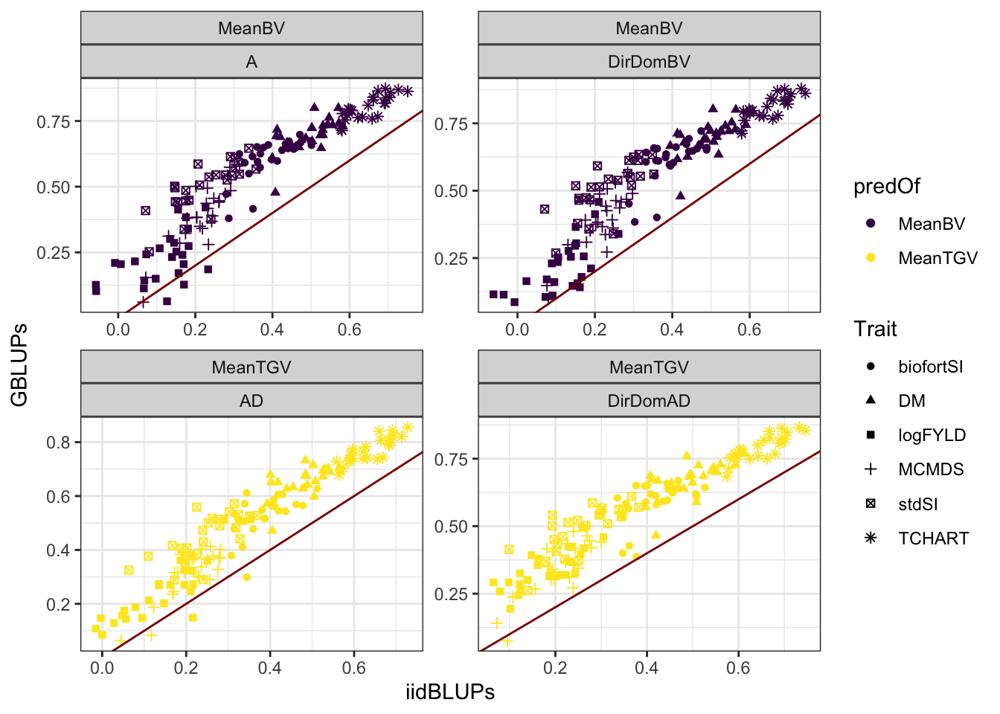
accMeans %>%
spread(ValidationData,Accuracy) %>%
mutate(diffAcc=GBLUPs-iidBLUPs) %$% summary(diffAcc) Min. 1st Qu. Median Mean 3rd Qu. Max.
-0.06718 0.12992 0.17184 0.17368 0.21438 0.38530 Prediction accuracy using GBLUPs as validation give a nearly uniform higher correlation (mean 0.17 higher).
The figure below tries to show that accuracies per trait-fold-rep-Model do not re-rank much from iid-to-GBLUP validation data.
forplot<-accMeans %>%
mutate(Pred=paste0(predOf,"_",Model),
Pred=factor(Pred,levels=c("MeanBV_A","MeanBV_DirDom","MeanTGV_AD","MeanTGV_DirDom")),
Trait=factor(Trait,levels=c("stdSI","biofortSI","DM","logFYLD","MCMDS","TCHART")),
predOf=factor(predOf,levels=c("MeanBV","MeanTGV")),
Model=factor(Model,levels=c("A","AD","DirDom")),
RepFold=paste0(Repeat,"_",Fold,"_",Trait))
forplot %>%
ggplot(aes(x=ValidationData,y=Accuracy)) +
geom_violin(data=forplot,aes(fill=ValidationData), alpha=0.75) +
geom_boxplot(data=forplot,aes(fill=ValidationData), alpha=0.85, color='gray',width=0.2) +
geom_line(data=forplot,aes(group=RepFold),color='darkred',size=0.6,alpha=0.8) +
geom_point(data=forplot,aes(color=ValidationData, group=RepFold),size=1.5) +
theme_bw() +
scale_fill_viridis_d(option = "A") +
scale_color_viridis_d() +
theme(axis.text.x = element_text(face='bold', size=10, angle=90),
axis.text.y = element_text(face='bold', size=10)) +
facet_grid(Trait~Pred, scales='free_y')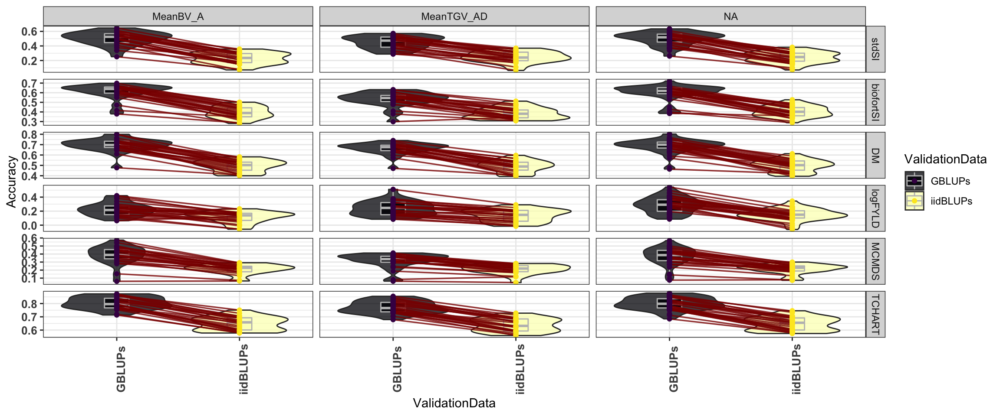
labs(title = "Accuracies per trait-fold-rep-Model do not re-rank much from iid-to-GBLUP validation data")$title
[1] "Accuracies per trait-fold-rep-Model do not re-rank much from iid-to-GBLUP validation data"
attr(,"class")
[1] "labels"accMeans %>%
mutate(Pred=paste0(predOf,"_",Model),
Pred=factor(Pred,levels=c("MeanBV_A","MeanBV_DirDomBV","MeanTGV_AD","MeanTGV_DirDomAD")),
Trait=factor(Trait,levels=c("stdSI","biofortSI","DM","logFYLD","MCMDS","TCHART")),
predOf=factor(predOf,levels=c("MeanBV","MeanTGV")),
Model=factor(Model,levels=c("A","AD","DirDom"))) %>%
ggplot(.,aes(x=Trait,y=Accuracy,fill=Pred,linetype=predOf)) +
geom_boxplot() + theme_bw() + scale_fill_viridis_d() +
geom_hline(yintercept = 0, color='darkred', size=1.5) +
theme(axis.text.x = element_text(face='bold', size=10, angle=90),
axis.text.y = element_text(face='bold', size=10)) +
facet_grid(.~ValidationData)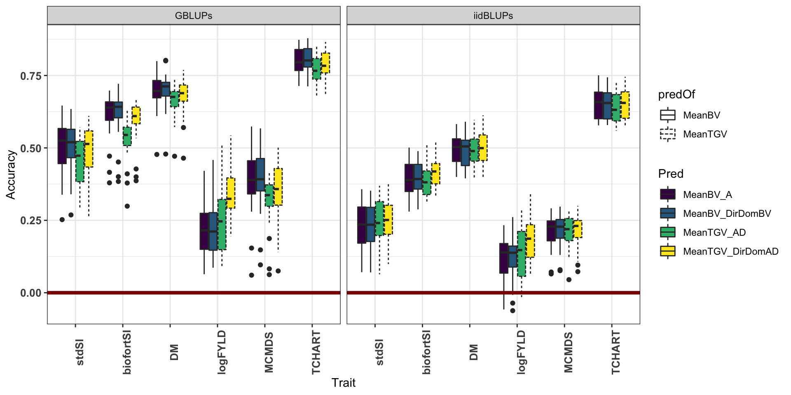
From hereon, for means, only considering GBLUP validation data.
Compare models
accMeans %>%
filter(ValidationData=="GBLUPs") %>%
group_by(Model,predOf) %>%
summarize(meanAcc=mean(Accuracy)) %>%
mutate_if(is.numeric,~round(.,3)) %>%
mutate(Model=ifelse(!grepl("DirDom",Model),"ClassicAD","DirDom")) %>%
spread(predOf,meanAcc) %>%
mutate(diffAcc=MeanTGV-MeanBV)# A tibble: 2 x 4
# Groups: Model [2]
Model MeanBV MeanTGV diffAcc
<chr> <dbl> <dbl> <dbl>
1 ClassicAD 0.538 0.495 -0.043
2 DirDom 0.541 0.543 0.002On average, across traits, the accuracy of predicting family-mean TGV were lower by -0.043 (0.002) for the ClassicAD (and DirDom) models.
accMeans %>%
filter(ValidationData=="GBLUPs") %>%
group_by(Model,predOf,Trait) %>%
summarize(meanAcc=mean(Accuracy)) %>%
mutate_if(is.numeric,~round(.,3)) %>%
mutate(Model=ifelse(!grepl("DirDom",Model),"ClassicAD","DirDom")) %>%
spread(predOf,meanAcc) %>%
mutate(diffAcc=MeanTGV-MeanBV)# A tibble: 12 x 5
# Groups: Model [2]
Model Trait MeanBV MeanTGV diffAcc
<chr> <chr> <dbl> <dbl> <dbl>
1 ClassicAD biofortSI 0.609 0.531 -0.0780
2 ClassicAD DM 0.697 0.663 -0.0340
3 ClassicAD logFYLD 0.227 0.241 0.0140
4 ClassicAD MCMDS 0.389 0.316 -0.073
5 ClassicAD stdSI 0.503 0.449 -0.0540
6 ClassicAD TCHART 0.803 0.773 -0.03
7 DirDom biofortSI 0.612 0.589 -0.023
8 DirDom DM 0.698 0.679 -0.0190
9 DirDom logFYLD 0.222 0.349 0.127
10 DirDom MCMDS 0.393 0.355 -0.038
11 DirDom stdSI 0.51 0.491 -0.019
12 DirDom TCHART 0.81 0.792 -0.018 But on a per-trait basis, for yield MeanTGV>MeanBV by 0.01 in the ClassicAD model, and was even higher (by 0.13) for the DirDom model.
accMeans %>%
filter(ValidationData=="GBLUPs") %>%
group_by(Model,predOf) %>%
summarize(meanAcc=mean(Accuracy)) %>%
mutate_if(is.numeric,~round(.,3)) %>%
mutate(Model=ifelse(!grepl("DirDom",Model),"ClassicAD","DirDom")) %>%
spread(Model,meanAcc) %>%
mutate(diffAcc=DirDom-ClassicAD)# A tibble: 2 x 4
predOf ClassicAD DirDom diffAcc
<chr> <dbl> <dbl> <dbl>
1 MeanBV 0.538 0.541 0.003
2 MeanTGV 0.495 0.543 0.048For both BV (0.003) and TGV (0.05), the DirDom model was on average more accurate.
accMeans %>%
filter(ValidationData=="GBLUPs") %>%
mutate(Model=ifelse(!grepl("DirDom",Model),"ClassicAD","DirDom")) %>%
group_by(Model,predOf,Trait) %>%
summarize(meanAcc=mean(Accuracy)) %>%
mutate_if(is.numeric,~round(.,3)) %>%
spread(Model,meanAcc) %>%
mutate(diffAcc=DirDom-ClassicAD) %>%
select(predOf,Trait,diffAcc) %>%
spread(predOf,diffAcc)# A tibble: 6 x 3
Trait MeanBV MeanTGV
<chr> <dbl> <dbl>
1 biofortSI 0.003 0.0580
2 DM 0.001 0.016
3 logFYLD -0.005 0.108
4 MCMDS 0.004 0.0390
5 stdSI 0.007 0.0420
6 TCHART 0.007 0.019 # ggplot(.,aes(x=MeanBV,y=MeanTGV,label=Trait)) + geom_label() + geom_point() + theme_bw() +
# labs(title="Compare diff Acc (DirDom-ClassicAD)") + geom_abline(slope=1)The accuracy for yield was higher for TGV than BV by 0.11had the highest increase (0.231 for BVs and 0.181 for TGVs) when using the DirDom vs. the ClassicAD model. DM and the StdSI were both more poorly predicted.
Predictions of variances and covariances
## Table S7: Predicted cross variances
predVars<-read.csv(here::here("manuscript","SupplementaryTable07.csv"),stringsAsFactors = F)PMV vs. VPM
First thing is to compare the PMV and VPM results. Ideally, they will be the same in accuracy and provide similar rankings. VPM is much faster and we would prefer to use it, e.g. for the predictions of untested crosses.
predVars %>%
group_by(Model,VarComp) %>%
summarize(corPMV_VPM=cor(VPM,PMV),
pctIncreasePMV_over_VPM=mean((PMV-VPM)/VPM))# A tibble: 6 x 4
# Groups: Model [4]
Model VarComp corPMV_VPM pctIncreasePMV_over_VPM
<chr> <chr> <dbl> <dbl>
1 A VarA 0.987 9.29
2 AD VarA 0.986 16.0
3 AD VarD 0.974 12.5
4 DirDomAD VarA 0.983 10.4
5 DirDomAD VarD 0.970 16.9
6 DirDomBV VarA 0.986 11.7 Across all predictions and models, the correlation between the PMV and VPM was very high.
predVars %>%
group_by(Model,VarComp) %>%
summarize(corPMV_VPM=cor(VPM,PMV),
pctIncreasePMV_over_VPM=mean((PMV-VPM)/VPM)) %$% mean(corPMV_VPM)[1] 0.9809162However, there is a difference in scale between predictions by VPM and PMV as seen in the figure below.
predVars %>%
mutate(VarCovar=paste0(Trait1,"_",Trait2),
Pred=paste0(Model,"_",VarComp),
diffPredVar=PMV-VPM) %>%
ggplot(.,aes(x=Pred,y=diffPredVar,fill=Pred,linetype=VarComp)) +
geom_boxplot() + facet_wrap(~VarCovar,scales='free',nrow=2) +
geom_hline(yintercept = 0) + theme_bw() +
theme(axis.text.x = element_text(angle=90)) +
scale_fill_viridis_d() +
labs(title="The difference between PMV and VPM for variance and covariance predictions",
y="diffPredVar = PMV minus VPM ")
PMV gave consistently higher variance predictions and larger covariance (\(|\sigma|\)) (either more negative i.e. DM-TCHART or more positive i.e. MCMDS_TCHART).
What about prediction accuracy according to PMV vs. VPM?
## Table S11: Accuracies predicting the variances
accVars<-readxl::read_xlsx(here::here("manuscript","SupplementaryTables.xlsx"),sheet = "TableS11")
accVars %>%
select(-AccuracyCor) %>%
spread(VarMethod,AccuracyWtCor) %>%
mutate(diffAcc=PMV-VPM) %$% summary(diffAcc) Min. 1st Qu. Median Mean 3rd Qu. Max.
-0.60769 -0.14047 -0.05226 -0.07392 0.01550 0.62149 PMV-based estimates of prediction accuracy were nearly uniformly lower (mean decrease in acc. -0.07).
accVars %>%
select(-AccuracyCor) %>%
spread(VarMethod,AccuracyWtCor) %>%
mutate(VarCovar=paste0(Trait1,"_",Trait2),
Pred=paste0(Model,"_",predOf),
diffAcc=PMV-VPM) %>%
ggplot(.,aes(x=Pred,y=diffAcc,fill=Pred,linetype=predOf)) +
geom_boxplot() + facet_wrap(~VarCovar,scales='free',nrow=2) +
geom_hline(yintercept = 0) + theme_bw() +
theme(axis.text.x = element_text(angle=90)) +
scale_fill_viridis_d() +
labs(title="The difference between PMV and VPM in terms of prediction accuracy",
y="diffPredAcc = predAccPMV minus predAccVPM ")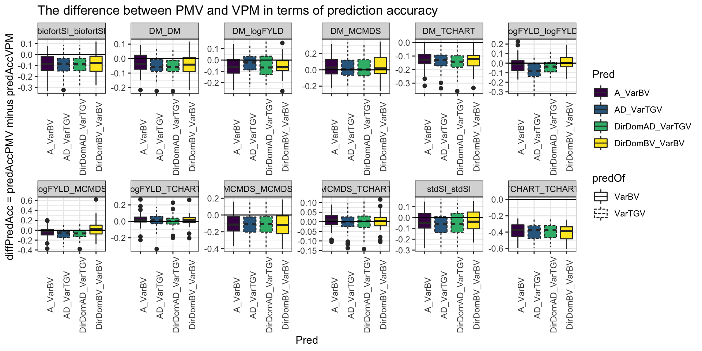
We will proceed with PMV results, except for the exploratory analyses, where we will save time/computation and use the VPM.
Compare validation data types
accVars %>%
filter(VarMethod=="PMV") %>%
select(-AccuracyCor) %>% #count(ValidationData,Model,VarComp)
spread(ValidationData,AccuracyWtCor) %>%
mutate(Component=paste0(Trait1,"_",Trait2)) %>%
ggplot(.,aes(x=iidBLUPs,y=GBLUPs,shape=predOf,color=Component)) +
geom_point() +
geom_abline(slope=1,color='darkred') +
facet_wrap(~predOf+Model,scales = 'free') +
theme_bw() + scale_color_viridis_d(option = "B")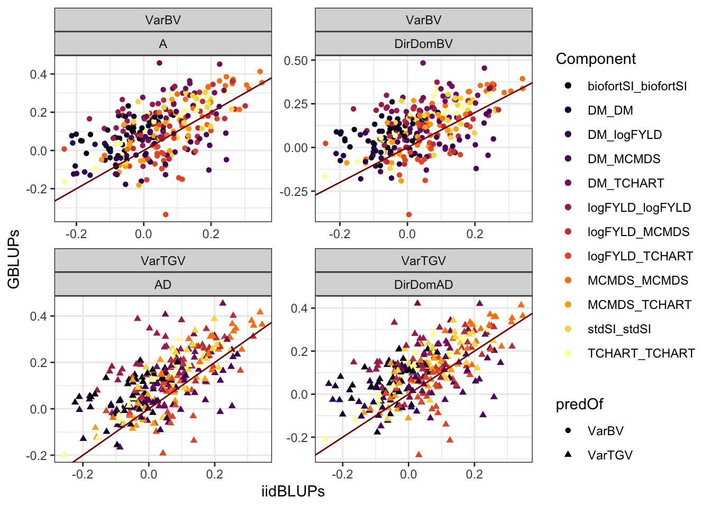
accVars %>%
filter(VarMethod=="PMV") %>%
select(-AccuracyCor) %>%
spread(ValidationData,AccuracyWtCor) %>%
mutate(diffAcc=GBLUPs-iidBLUPs) %$% summary(diffAcc) Min. 1st Qu. Median Mean 3rd Qu. Max.
-0.400391 0.002691 0.073790 0.067121 0.136685 0.437231 Similar to the means, GBLUPs as validation data for variances was higher on average (mean 0.073).
Below I make several plots of the data to explore the consequences of using GBLUPs vs. iidBLUPs as validation data. The first one shows (for simplicity just for the variances on the SI’s) that there is re-ranking of accuracies b/t validation data-types. The boxplots that follow try to determine if similar conclusions would be reached from either validation data.
forplot<-accVars %>%
filter(VarMethod=="PMV") %>%
filter(Trait1==Trait2,grepl("SI",Trait1)) %>%
mutate(Pred=paste0(predOf,"_",Model),
Pred=factor(Pred,levels=c("VarBV_A","VarBV_DirDomBV","VarTGV_AD","VarTGV_DirDomAD")),
Trait1=factor(Trait1,levels=c("stdSI","biofortSI")),#,"DM","logFYLD","MCMDS","TCHART")),
Trait2=factor(Trait2,levels=c("stdSI","biofortSI")),#,"DM","logFYLD","MCMDS","TCHART")),
Component=paste0(Trait1,"_",Trait2),
predOf=factor(predOf,levels=c("VarBV","VarTGV")),
Model=factor(Model,levels=c("A","AD","DirDomBV","DirDomAD")),
RepFold=paste0(Repeat,"_",Fold,"_",Component))
forplot %>%
ggplot(aes(x=ValidationData,y=AccuracyWtCor)) +
geom_violin(data=forplot,aes(fill=ValidationData), alpha=0.75) +
geom_boxplot(data=forplot,aes(fill=ValidationData), alpha=0.85, color='gray',width=0.2) +
geom_line(data=forplot,aes(group=RepFold),color='darkred',size=0.6,alpha=0.8) +
geom_point(data=forplot,aes(color=ValidationData, group=RepFold),size=1.5) +
theme_bw() +
scale_fill_viridis_d(option = "A") +
scale_color_viridis_d() +
theme(axis.text.x = element_text(face='bold', size=10, angle=90),
axis.text.y = element_text(face='bold', size=10)) +
facet_grid(Component~Pred, scales='free_y') +
labs(title="Plot of variance-prediction accuracy: Re-ranking according choice of validation?")
| Version | Author | Date |
|---|---|---|
| 22e6c87 | wolfemd | 2021-01-03 |
forplot<-accVars %>%
filter(VarMethod=="PMV") %>%
mutate(Pred=paste0(predOf,"_",Model),
Pred=factor(Pred,levels=c("VarBV_A","VarTGV_AD","VarBV_DirDomBV","VarTGV_DirDomAD")),
Trait1=factor(Trait1,levels=c("stdSI","biofortSI","DM","logFYLD","MCMDS","TCHART")),
Trait2=factor(Trait2,levels=c("stdSI","biofortSI","DM","logFYLD","MCMDS","TCHART")),
Component=paste0(Trait1,"_",Trait2),
predOf=factor(predOf,levels=c("VarBV","VarTGV")),
Model=factor(Model,levels=c("A","AD","DirDomBV","DirDomAD")),
RepFold=paste0(Repeat,"_",Fold,"_",Component))
forplot %>%
filter(Trait1==Trait2) %>%
ggplot(.,aes(x=Component,y=AccuracyWtCor,fill=Pred,linetype=predOf)) +
geom_boxplot() + theme_bw() + scale_fill_viridis_d() +
geom_hline(yintercept = 0, color='darkred', size=1.5) +
theme(axis.text.x = element_text(face='bold', size=10, angle=90),
axis.text.y = element_text(face='bold', size=10)) +
facet_wrap(~ValidationData,scales='free') +
ggtitle(expression(paste("Plot of ", underline(variance), "-prediction accuracy"))) +
labs(subtitle="GBLUPs vs. iidBLUPs as validation-data")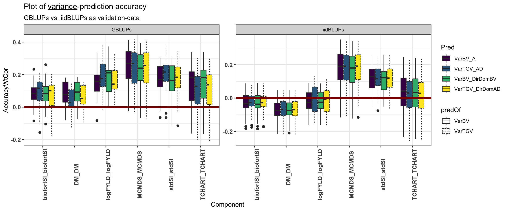
forplot %>%
filter(VarMethod=="PMV") %>%
filter(Trait1!=Trait2) %>%
ggplot(.,aes(x=Component,y=AccuracyWtCor,fill=Pred,linetype=predOf)) +
geom_boxplot() + theme_bw() + scale_fill_viridis_d() +
geom_hline(yintercept = 0, color='darkred', size=1.5) +
theme(axis.text.x = element_text(face='bold', size=10, angle=90),
axis.text.y = element_text(face='bold', size=10)) +
facet_wrap(~ValidationData,scales='free') +
ggtitle(expression(paste("Plot of ", underline(co), "variance-prediction accuracy"))) +
labs(subtitle="GBLUPs vs. iidBLUPs as validation-data")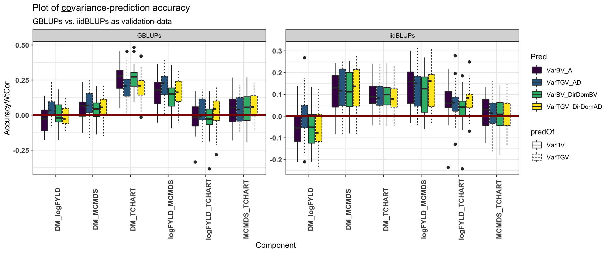
The two sets of boxplots (variances and covariances) above suggest that we would reach similar but less strong conclusions above the difference between prediction models and variance components. Moreover, we would reach similar conclusions about which trait variances and trait-trait covariances are best or worst predicted. We consider for our primary conclusions, the prediction accuracy with GBLUP-derived validation data.
What difference does the weighted correlation make?
For variances (but not means), we chose to weight prediction-observation pairs according to the number of family members (GBLUPs-as-validation) or the number of observed non-missing iid-BLUPs per family per trait (iidBLUPs-as-validation) when computing prediction accuracies. The weighted correlations should be justified because large families (or heavily phenotyped ones) should have better-estimated variances than small ones. Below, we consider briefly the effect weighted correlations have on results.
accVars %>%
group_by(VarMethod,ValidationData,predOf,Model) %>%
summarize(corWT_vs_noWT=cor(AccuracyWtCor,AccuracyCor)) %$% summary(corWT_vs_noWT) Min. 1st Qu. Median Mean 3rd Qu. Max.
0.7844 0.8261 0.8727 0.8674 0.9039 0.9396 accVars %>%
group_by(VarMethod,ValidationData,predOf,Model,Trait1,Trait2) %>%
summarize(corWT_vs_noWT=cor(AccuracyWtCor,AccuracyCor)) %$% summary(corWT_vs_noWT) Min. 1st Qu. Median Mean 3rd Qu. Max.
0.5549 0.7381 0.8107 0.7935 0.8627 0.9188 We found that the weighted-vs-unweighted accuracies are themselves similar highly correlated (mean cor. 0.87) across traits, varcomps, models and validation-data types.
accVars %>%
mutate(diffAcc=AccuracyWtCor-AccuracyCor) %$% summary(diffAcc) Min. 1st Qu. Median Mean 3rd Qu. Max.
-0.21630 -0.03242 0.01519 0.01500 0.06172 0.22821 Definitely not a consistent increase or decrease in accuracy according to weighting.
accVars %>%
mutate(diffAcc=AccuracyWtCor-AccuracyCor) %>%
group_by(VarMethod,ValidationData,predOf,Model) %>%
summarize(meanDiffAcc_WT_vs_noWT=mean(diffAcc))# A tibble: 16 x 5
# Groups: VarMethod, ValidationData, predOf [8]
VarMethod ValidationData predOf Model meanDiffAcc_WT_vs_noWT
<chr> <chr> <chr> <chr> <dbl>
1 PMV GBLUPs VarBV A 0.00656
2 PMV GBLUPs VarBV DirDomBV 0.00817
3 PMV GBLUPs VarTGV AD 0.0135
4 PMV GBLUPs VarTGV DirDomAD 0.0121
5 PMV iidBLUPs VarBV A 0.00567
6 PMV iidBLUPs VarBV DirDomBV 0.00610
7 PMV iidBLUPs VarTGV AD 0.00880
8 PMV iidBLUPs VarTGV DirDomAD 0.00716
9 VPM GBLUPs VarBV A 0.0287
10 VPM GBLUPs VarBV DirDomBV 0.0260
11 VPM GBLUPs VarTGV AD 0.0334
12 VPM GBLUPs VarTGV DirDomAD 0.0350
13 VPM iidBLUPs VarBV A 0.0111
14 VPM iidBLUPs VarBV DirDomBV 0.00975
15 VPM iidBLUPs VarTGV AD 0.0140
16 VPM iidBLUPs VarTGV DirDomAD 0.0140 Across varcomps, models, validation-data and var. methods (PMV vs. VPM), very close to mean 0 diff. b/t WT and no WT, but generally WT>noWT.
accVars %>%
filter(VarMethod=="PMV",ValidationData=="GBLUPs") %>%
mutate(Pred=paste0(predOf,"_",Model),
Pred=factor(Pred,levels=c("VarBV_A","VarTGV_AD","VarBV_DirDomBV","VarTGV_DirDomAD")),
diffAcc=AccuracyWtCor-AccuracyCor,
Component=paste0(Trait1,"_",Trait2)) %>%
group_by(Pred,Component) %>%
summarize(meanDiffAcc_WT_vs_noWT=round(mean(diffAcc),3)) %>%
spread(Pred,meanDiffAcc_WT_vs_noWT)# A tibble: 12 x 5
Component VarBV_A VarTGV_AD VarBV_DirDomBV VarTGV_DirDomAD
<chr> <dbl> <dbl> <dbl> <dbl>
1 biofortSI_biofortSI -0.005 0.023 0.004 0.014
2 DM_DM 0.014 -0.016 0.018 -0.004
3 DM_logFYLD 0.014 0.019 0.013 0.015
4 DM_MCMDS -0.031 -0.024 -0.043 -0.029
5 DM_TCHART 0.065 0.049 0.062 0.057
6 logFYLD_logFYLD 0.002 0.056 0.006 0.052
7 logFYLD_MCMDS 0.065 0.101 0.066 0.078
8 logFYLD_TCHART -0.007 -0.034 0.006 -0.012
9 MCMDS_MCMDS 0.007 0.033 0.01 0.02
10 MCMDS_TCHART -0.028 -0.041 -0.027 -0.032
11 stdSI_stdSI -0.011 0.02 -0.008 0
12 TCHART_TCHART -0.009 -0.023 -0.007 -0.015Considering the boxplots below, conclusions appear to be at least qualitatively similar whether or not weighted correlations are considered as measures of accuracy.
forplot<-accVars %>%
filter(VarMethod=="PMV",ValidationData=="GBLUPs") %>%
pivot_longer(cols=contains("Cor"),names_to = "WT_or_NoWT", values_to = "Accuracy") %>%
mutate(Pred=paste0(predOf,"_",Model),
Pred=factor(Pred,levels=c("VarBV_A","VarTGV_AD","VarBV_DirDomBV","VarTGV_DirDomAD")),
Trait1=factor(Trait1,levels=c("stdSI","biofortSI","DM","logFYLD","MCMDS","TCHART")),
Trait2=factor(Trait2,levels=c("stdSI","biofortSI","DM","logFYLD","MCMDS","TCHART")),
Component=paste0(Trait1,"_",Trait2),
predOf=factor(predOf,levels=c("VarBV","VarTGV")),
Model=factor(Model,levels=c("A","AD","DirDomBV","DirDomAD")),
RepFold=paste0(Repeat,"_",Fold,"_",Component))
forplot %>%
filter(Trait1==Trait2) %>%
ggplot(.,aes(x=Component,y=Accuracy,fill=Pred,linetype=predOf)) +
geom_boxplot() + theme_bw() + scale_fill_viridis_d() +
geom_hline(yintercept = 0, color='darkred', size=1.5) +
theme(axis.text.x = element_text(face='bold', size=10, angle=90),
axis.text.y = element_text(face='bold', size=10)) +
facet_wrap(~WT_or_NoWT,scales='free') +
ggtitle(expression(paste("Plot of ", underline(variance), "-prediction accuracy"))) +
labs(subtitle="Weighted vs. Unweighted Correlation, GBLUPs as validation-data")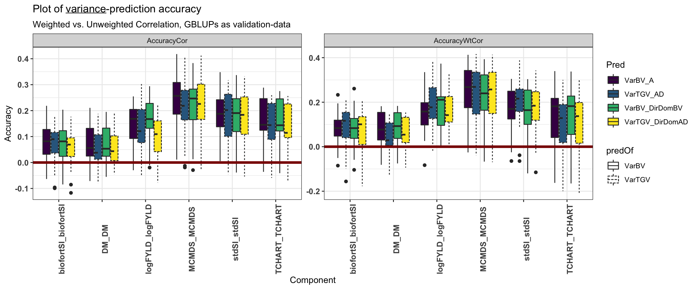
| Version | Author | Date |
|---|---|---|
| 22e6c87 | wolfemd | 2021-01-03 |
forplot %>%
filter(Trait1!=Trait2) %>%
ggplot(.,aes(x=Component,y=Accuracy,fill=Pred,linetype=predOf)) +
geom_boxplot() + theme_bw() + scale_fill_viridis_d() +
geom_hline(yintercept = 0, color='darkred', size=1.5) +
theme(axis.text.x = element_text(face='bold', size=10, angle=90),
axis.text.y = element_text(face='bold', size=10)) +
facet_wrap(~WT_or_NoWT,scales='free') +
ggtitle(expression(paste("Plot of ", underline(co), "variance-prediction accuracy"))) +
labs(subtitle="Weighted vs. Unweighted Correlation, GBLUPs as validation-data")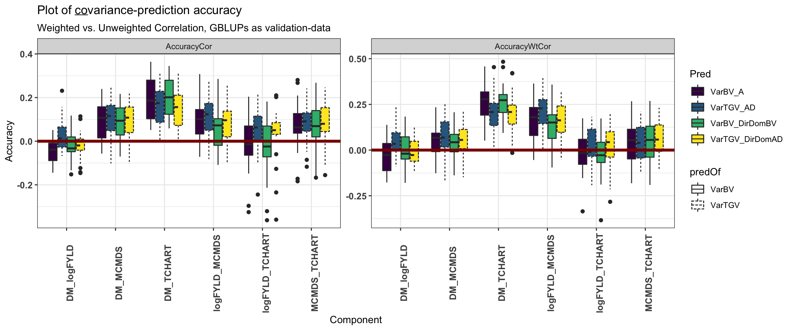
Compare models
We consider the accuracy of predicting variances (and subsequently also usefulness criteria) using the “PMV” variance method, GBLUPs as validation-data and family-size-weighted correlations.
library(tidyverse); library(magrittr);
## Table S11: Accuracies predicting the variances
accVars<-readxl::read_xlsx(here::here("manuscript","SupplementaryTables.xlsx"),sheet = "TableS11")accVars %>%
filter(ValidationData=="GBLUPs",VarMethod=="PMV") %>%
mutate(Model=ifelse(!grepl("DirDom",Model),"ClassicAD","DirDom"),
Component=ifelse(Trait1==Trait2,"Variance","Covariance"),
TraitType=ifelse(grepl("SI",Trait1),"SI","ComponentTrait")) %>%
group_by(Component) %>%
summarize(meanAcc=round(mean(AccuracyWtCor),3),
sdAcc=round(sd(AccuracyWtCor),3))# A tibble: 2 x 3
Component meanAcc sdAcc
<chr> <dbl> <dbl>
1 Covariance 0.085 0.135
2 Variance 0.143 0.119Most variance prediction accuracy estimates were positive, with a mean weighted correlation of 0.14. Mean accuracy for covariance prediction was less (0.09).
accVars %>%
filter(ValidationData=="GBLUPs",VarMethod=="PMV") %>%
mutate(Model=ifelse(!grepl("DirDom",Model),"ClassicAD","DirDom"),
Component=ifelse(Trait1==Trait2,"Variance","Covariance"),
TraitType=ifelse(grepl("SI",Trait1),"SI","ComponentTrait")) %>%
group_by(Component,TraitType,Trait1,Trait2) %>%
summarize(meanAcc=round(mean(AccuracyWtCor),3)) %>% arrange(desc(meanAcc))# A tibble: 12 x 5
# Groups: Component, TraitType, Trait1 [9]
Component TraitType Trait1 Trait2 meanAcc
<chr> <chr> <chr> <chr> <dbl>
1 Covariance ComponentTrait DM TCHART 0.236
2 Variance ComponentTrait MCMDS MCMDS 0.235
3 Variance SI stdSI stdSI 0.177
4 Covariance ComponentTrait logFYLD MCMDS 0.168
5 Variance ComponentTrait logFYLD logFYLD 0.167
6 Variance ComponentTrait TCHART TCHART 0.131
7 Variance SI biofortSI biofortSI 0.079
8 Variance ComponentTrait DM DM 0.066
9 Covariance ComponentTrait DM MCMDS 0.059
10 Covariance ComponentTrait MCMDS TCHART 0.047
11 Covariance ComponentTrait logFYLD TCHART 0.002
12 Covariance ComponentTrait DM logFYLD -0.001In contrast to results for predicting family means, the most accurately predicted trait-variances were MCMDS (mean acc. 0.24) and logFYLD (mean acc. 0.17) while Var(DM), for example, had among the lowest accuracies at 0.07). Interestingly, the DM-TCHART covariance was the most well predicted component (mean acc. 0.24). Accuracy for the selection index variances were intermediate (mean stdSI = 0.18, mean biofortSI = 0.08) compared to the component traits. Like the accuracy for means on the SI’s, accuracy for variance corresponding to the accuracy of the component traits. In contrast to predicting cross means on SI’s, for variances, the stdSI > biofortSI. This makes sense as the stdSI emphasized logFYLD and MCMDS, which are better predicted than DM, TCHART and related covariances.
accVars %>%
filter(ValidationData=="GBLUPs",VarMethod=="PMV") %>%
group_by(Model,predOf) %>%
summarize(meanAcc=mean(AccuracyWtCor)) %>%
mutate_if(is.numeric,~round(.,3)) %>%
mutate(Model=ifelse(!grepl("DirDom",Model),"ClassicAD","DirDom")) %>%
spread(predOf,meanAcc) %>%
mutate(diffAcc=VarTGV-VarBV)# A tibble: 2 x 4
# Groups: Model [2]
Model VarBV VarTGV diffAcc
<chr> <dbl> <dbl> <dbl>
1 ClassicAD 0.112 0.124 0.0120
2 DirDom 0.11 0.108 -0.002 There were, overall, only small differences in accuracy between prediction models (ClassicAD and DirDom) and var. components (VarBV, VarTGV). On average, across trait variances and covariances, the accuracy of predicting family-(co)variance in TGV were higher (than predicting VarBV) by 0.01 for the ClassicAD but lower by -0.002 for the DirDom model.
VarTGV: ClassicAD was best for most components.
VarBV: DirDom was best for most components.
# Interesting differences between accuracy VarBV vs. VarTGV?
accVars %>%
filter(ValidationData=="GBLUPs",VarMethod=="PMV") %>%
mutate(Model=ifelse(!grepl("DirDom",Model),"ClassicAD","DirDom"),
Component=ifelse(Trait1==Trait2,"Variance","Covariance"),
Trait=paste0(Trait1,"_",Trait2)) %>%
group_by(Model,predOf,Component,Trait,Trait1,Trait2) %>%
summarize(meanAcc=round(mean(AccuracyWtCor),3)) %>%
spread(predOf,meanAcc) %>%
mutate(diffAcc=VarTGV-VarBV) %>% arrange(Model,desc(diffAcc))# A tibble: 24 x 8
# Groups: Model, Component, Trait, Trait1 [24]
Model Component Trait Trait1 Trait2 VarBV VarTGV diffAcc
<chr> <chr> <chr> <chr> <chr> <dbl> <dbl> <dbl>
1 ClassicAD Covariance DM_logFYLD DM logFYLD -0.036 0.048 0.0840
2 ClassicAD Covariance logFYLD_MCMDS logFYLD MCMDS 0.166 0.213 0.0470
3 ClassicAD Variance logFYLD_logFYLD logFYLD logFYLD 0.147 0.193 0.046
4 ClassicAD Covariance logFYLD_TCHART logFYLD TCHART -0.016 0.024 0.04
5 ClassicAD Variance stdSI_stdSI stdSI stdSI 0.172 0.197 0.025
6 ClassicAD Covariance DM_MCMDS DM MCMDS 0.059 0.079 0.02
7 ClassicAD Variance biofortSI_biof… biofort… biofort… 0.076 0.09 0.0140
8 ClassicAD Covariance MCMDS_TCHART MCMDS TCHART 0.044 0.042 -0.00200
9 ClassicAD Variance MCMDS_MCMDS MCMDS MCMDS 0.243 0.239 -0.004
10 ClassicAD Variance TCHART_TCHART TCHART TCHART 0.147 0.113 -0.0340
# … with 14 more rowsInteresting differences between accuracy VarBV vs. VarTGV?
The largest increases (diffAcc = accVarTGV - accVarBV) were logFYLD-MCMDS (0.065) and logFYLD-TCHART (0.053) followed by the stdSI variance (0.04), all for the ClassicAD model. VarTGV was better predicted than VarBV for yield in the ClassicAD model (0.03), but decreased sharply (-0.08) for the DirDom model.
# Interesting differences between accuracy DirDom vs. ClassicAD?
accVars %>%
filter(ValidationData=="GBLUPs",VarMethod=="PMV") %>%
mutate(Model=ifelse(!grepl("DirDom",Model),"ClassicAD","DirDom"),
Component=ifelse(Trait1==Trait2,"Variance","Covariance"),
Trait=paste0(Trait1,"_",Trait2)) %>%
group_by(Model,predOf,Component,Trait,Trait1,Trait2) %>%
summarize(meanAcc=round(mean(AccuracyWtCor),3)) %>%
spread(Model,meanAcc) %>%
mutate(diffAcc=DirDom-ClassicAD) %>% arrange(predOf,desc(diffAcc))# A tibble: 24 x 8
# Groups: predOf, Component, Trait, Trait1 [24]
predOf Component Trait Trait1 Trait2 ClassicAD DirDom diffAcc
<chr> <chr> <chr> <chr> <chr> <dbl> <dbl> <dbl>
1 VarBV Covariance DM_logFYLD DM logFYLD -0.036 -0.008 0.0280
2 VarBV Variance logFYLD_logFYLD logFYLD logFYLD 0.147 0.171 0.024
3 VarBV Covariance DM_TCHART DM TCHART 0.261 0.266 0.005
4 VarBV Variance DM_DM DM DM 0.082 0.087 0.00500
5 VarBV Covariance MCMDS_TCHART MCMDS TCHART 0.044 0.046 0.002
6 VarBV Variance biofortSI_biof… biofort… biofort… 0.076 0.078 0.002
7 VarBV Variance TCHART_TCHART TCHART TCHART 0.147 0.146 -0.001
8 VarBV Covariance logFYLD_TCHART logFYLD TCHART -0.016 -0.02 -0.004
9 VarBV Variance stdSI_stdSI stdSI stdSI 0.172 0.163 -0.00900
10 VarBV Variance MCMDS_MCMDS MCMDS MCMDS 0.243 0.224 -0.0190
# … with 14 more rowsFocusing next on differences between the DirDom and ClassicAD models (diffAcc = DirDom - ClassicAD).
logFYLD and logFYLD-TCHART variances and covariances for BVs were up by 0.1 for DirDom. In contrast, both of these components for TGV were down (-0.01 logFYLD, -0.05 logFYLD-TCHART).
accVars %>%
filter(ValidationData=="GBLUPs",VarMethod=="PMV", grepl("SI",Trait1)) %>%
mutate(Model=ifelse(!grepl("DirDom",Model),"ClassicAD","DirDom"),
Component=ifelse(Trait1==Trait2,"Variance","Covariance"),
Trait=paste0(Trait1,"_",Trait2)) %>%
group_by(Trait,Trait1,Trait2) %>%
summarize(meanAcc=round(mean(AccuracyWtCor),3)) %>% ungroup() # A tibble: 2 x 4
Trait Trait1 Trait2 meanAcc
<chr> <chr> <chr> <dbl>
1 biofortSI_biofortSI biofortSI biofortSI 0.079
2 stdSI_stdSI stdSI stdSI 0.177Regarding the selection index variance accuracies:
On average, the accuracy for the StdSI was twice that of the biofortSI (0.18 vs. 0.08).
accVars %>%
filter(ValidationData=="GBLUPs",VarMethod=="PMV", grepl("SI",Trait1)) %>%
mutate(Model=ifelse(!grepl("DirDom",Model),"ClassicAD","DirDom"),
Component=ifelse(Trait1==Trait2,"Variance","Covariance"),
Trait=paste0(Trait1,"_",Trait2)) %>%
group_by(Model,predOf,Component,Trait,Trait1,Trait2) %>%
summarize(meanAcc=round(mean(AccuracyWtCor),3)) %>% ungroup() %>%
select(-Trait,-Trait2,-Component) %>% spread(predOf,meanAcc)# A tibble: 4 x 4
Model Trait1 VarBV VarTGV
<chr> <chr> <dbl> <dbl>
1 ClassicAD biofortSI 0.076 0.09
2 ClassicAD stdSI 0.172 0.197
3 DirDom biofortSI 0.078 0.07
4 DirDom stdSI 0.163 0.176For both models and both indices, VarTGV was better predicted than VarBV.
accVars %>%
filter(ValidationData=="GBLUPs",VarMethod=="PMV", grepl("SI",Trait1)) %>%
mutate(Model=ifelse(!grepl("DirDom",Model),"ClassicAD","DirDom"),
Component=ifelse(Trait1==Trait2,"Variance","Covariance"),
Trait=paste0(Trait1,"_",Trait2)) %>%
group_by(Model,predOf,Component,Trait,Trait1,Trait2) %>%
summarize(meanAcc=round(mean(AccuracyWtCor),3)) %>% ungroup() %>%
select(-Trait,-Trait2,-Component) %>% spread(Model,meanAcc)# A tibble: 4 x 4
predOf Trait1 ClassicAD DirDom
<chr> <chr> <dbl> <dbl>
1 VarBV biofortSI 0.076 0.078
2 VarBV stdSI 0.172 0.163
3 VarTGV biofortSI 0.09 0.07
4 VarTGV stdSI 0.197 0.176However, the DirDom model (compared to the ClassicAD model) increased accuracy slightly for both VarBV and VarTGV on the biofortSI, but decreased it on the StdSI.
Prediction of the UC
The usefulness criteria i.e. \(UC_{parent}\) and \(UC_{clone}\) are predicted by:
\[UC_{parent}=UC_{RS}=\mu_{BV} + (i_{RS} \times \sigma_{BV})\]
\[UC_{clone}=UC_{VDP}=\mu_{TGV} + (i_{VDP} \times \sigma_{TGV})\]
The observed (or realized) UC are the mean GEBV of family members who were themselves later used as parents.
In order to combined predicted means and variances into a UC, we first calculated the realized intensity of within-family selection (\(i_{RS}\) and \(i_{VDP}\)). For \(UC_{parent}\) we computed the \(i_{RS}\) based on the proportion of progeny from each family, that themselves later appeared in the pedigree as parents. For \(UC_{clone}\) we compute computed \(i_{VDP}\) based on the proportion of family-members that had at least one plot at each VDP stage (CET, PYT, AYT, UYT).
Below, we plot the proportion of each family selected (A) and the selection intensity (B) for each stage.
library(tidyverse); library(magrittr);
## Table S13: Realized within-cross selection metrics
crossmetrics<-readxl::read_xlsx(here::here("manuscript","SupplementaryTables.xlsx"),sheet = "TableS13")library(patchwork)
propPast<-crossmetrics %>%
mutate(Cycle=ifelse(!grepl("TMS13|TMS14|TMS15",sireID) & !grepl("TMS13|TMS14|TMS15",damID),"C0",
ifelse(grepl("TMS13",sireID) | grepl("TMS13",damID),"C1",
ifelse(grepl("TMS14",sireID) | grepl("TMS14",damID),"C2",
ifelse(grepl("TMS15",sireID) | grepl("TMS15",damID),"C3","mixed"))))) %>%
select(Cycle,starts_with("prop")) %>%
pivot_longer(cols = contains("prop"),values_to = "PropPast",names_to = "StagePast",names_prefix = "propPast|prop") %>%
rename(DescendentsOfCycle=Cycle) %>%
mutate(StagePast=gsub("UsedAs","",StagePast),
StagePast=factor(StagePast,levels=c("Parent","Phenotyped","CET","PYT","AYT"))) %>%
ggplot(.,aes(x=StagePast,y=PropPast,fill=DescendentsOfCycle)) +
geom_boxplot(position = 'dodge2',color='black') +
theme_bw() + scale_fill_viridis_d() + labs(y="Proportion of Family Selected") +
theme(legend.position = 'none')
realIntensity<-crossmetrics %>%
mutate(Cycle=ifelse(!grepl("TMS13|TMS14|TMS15",sireID) & !grepl("TMS13|TMS14|TMS15",damID),"C0",
ifelse(grepl("TMS13",sireID) | grepl("TMS13",damID),"C1",
ifelse(grepl("TMS14",sireID) | grepl("TMS14",damID),"C2",
ifelse(grepl("TMS15",sireID) | grepl("TMS15",damID),"C3","mixed"))))) %>%
select(Cycle,sireID,damID,contains("realIntensity")) %>%
pivot_longer(cols = contains("realIntensity"),names_to = "Stage", values_to = "Intensity",names_prefix = "realIntensity") %>%
rename(DescendentsOfCycle=Cycle) %>%
distinct %>% ungroup() %>%
mutate(Stage=factor(Stage,levels=c("Parent","CET","PYT","AYT","UYT"))) %>%
ggplot(.,aes(x=Stage,y=Intensity,fill=DescendentsOfCycle)) +
geom_boxplot(position = 'dodge2',color='black') +
theme_bw() + scale_fill_viridis_d() + labs(y="Stadardized Selection Intensity")
propPast + realIntensity +
plot_annotation(tag_levels = 'A',
title = 'Realized selection intensities: measuring post-cross selection') &
theme(plot.title = element_text(size = 14, face='bold'),
plot.tag = element_text(size = 13, face='bold'),
strip.text.x = element_text(size=11, face='bold'))
| Version | Author | Date |
|---|---|---|
| 22e6c87 | wolfemd | 2021-01-03 |
The table below provides a quick summary of the number of families available with realized selection observed at each stage, plus the corresponding mean selection intensity and proportion selected across families.
left_join(crossmetrics %>%
select(sireID,damID,contains("realIntensity")) %>%
pivot_longer(cols = contains("realIntensity"),names_to = "Stage", values_to = "Intensity",names_prefix = "realIntensity") %>%
group_by(Stage) %>%
summarize(meanIntensity=mean(Intensity, na.rm = T),
Nfam=length(which(!is.na(Intensity)))),
crossmetrics %>%
select(sireID,damID,contains("prop")) %>%
rename(propParent=propUsedAsParent,
propCET=propPhenotyped,
propPYT=propPastCET,
propAYT=propPastPYT,
propUYT=propPastAYT) %>%
pivot_longer(cols = contains("prop"),values_to = "PropPast",names_to = "Stage",names_prefix = "propPast|prop") %>%
group_by(Stage) %>%
summarize(meanPropPast=mean(PropPast, na.rm = T))) %>%
mutate(Stage=factor(Stage,levels=c("Parent","CET","PYT","AYT","UYT"))) %>%
arrange(Stage) %>%
select(Stage,Nfam,meanIntensity,meanPropPast) %>% mutate_if(is.numeric,~round(.,2))# A tibble: 5 x 4
Stage Nfam meanIntensity meanPropPast
<fct> <dbl> <dbl> <dbl>
1 Parent 866 1.59 0.02
2 CET 7446 0.26 0.76
3 PYT 5164 0.9 0.3
4 AYT 1864 1.45 0.05
5 UYT 706 1.4 0.03There were 48 families with a mean intensity of 1.59 (mean 2% selected) that themselves had members who were parents in the pedigree.
As expected, the number of available families and the proportion selected decreased (increasing selection intensity) from CET to UYT. We choose to focus on the AYT stage, which has 104 families, mean intensity 1.46 (mean 5% selected).
library(tidyverse); library(magrittr);
## Table S9: Predicted and observed UC
predVSobsUC<-read.csv(here::here("manuscript","SupplementaryTable09.csv"),stringsAsFactors = F)
uc_cv_summary<-predVSobsUC %>%
filter(VarMethod=="PMV") %>%
group_by(Model,predOf,Stage,Trait,Repeat,Fold) %>%
summarize(Nfam=n(),
meanFamSize=round(mean(FamSize),1)) %>%
ungroup() %>%
select(-Trait,-Model) %>%
distinct
uc_cv_summary %>%
group_by(predOf,Stage) %>%
summarize(minNfam=min(Nfam),
meanNfam=mean(Nfam),
maxNfam=max(Nfam),
minMeanFamSize=min(meanFamSize),
meanMeanFamSize=mean(meanFamSize),
maxMeanFamSize=max(meanFamSize))# A tibble: 7 x 8
# Groups: predOf [2]
predOf Stage minNfam meanNfam maxNfam minMeanFamSize meanMeanFamSize
<chr> <chr> <int> <dbl> <int> <dbl> <dbl>
1 BV Cons… 143 166. 204 5.9 6.85
2 BV Pare… 9 17.3 24 8.8 13.8
3 TGV AYT 25 37.3 50 10.9 12.9
4 TGV CET 129 149. 192 6.3 7.48
5 TGV Cons… 143 166. 204 5.9 6.85
6 TGV PYT 69 103. 142 7.3 8.73
7 TGV UYT 8 14.1 20 7.3 11.8
# … with 1 more variable: maxMeanFamSize <dbl>On a per-repeat-fold basis, sample sizes (number of families) with observed usefulness (and thus for measuring prediction accuracy) were limited. For \(UC_{parent}\) there were an average of 17 families (min 9, max 24). For \(UC_{clone}\) the sizes depending on the Stage, with the focal stage \(UC_{clone}^{[AYT]}\) mean number of families was 37 (min 25, max 50).
predVSobsUC %>%
filter(VarMethod=="PMV",Stage %in% c("Parent","AYT")) %>%
select(-predMean,-predSD,-realIntensity) %>%
nest(predVSobs=c(sireID,damID,predUC,obsUC,FamSize,Repeat,Fold,Model)) %>%
mutate(AccuracyWtCor=map_dbl(predVSobs,~psych::cor.wt(.[,3:4],w = .$FamSize) %$% round(r[1,2],2))) %>%
select(-predVSobs,-VarMethod,-predOf) %>%
spread(Stage,AccuracyWtCor)# A tibble: 2 x 3
Trait AYT Parent
<chr> <dbl> <dbl>
1 biofortSI 0.38 0.61
2 stdSI 0.24 0.46Computing a single accuracy across all repeats, folds and models, the \(UC_{parent}\) criterion is more accurately predicted (0.46 stdSI, 0.61 biofortSI) than \(UC_{clone}^{[AYT]}\) (0.24 stdSI, 0.38 biofortSI).
library(tidyverse); library(magrittr);
## Table S12: Accuracies predicting the usefulness criteria
accUC<-readxl::read_xlsx(here::here("manuscript","SupplementaryTables.xlsx"),sheet = "TableS12")accUC %>%
filter(VarMethod=="PMV",Stage %in% c("Parent","AYT")) %>%
group_by(Trait) %>%
summarize(meanAcc=round(mean(AccuracyWtCor),2)) %>%
ungroup()# A tibble: 2 x 2
Trait meanAcc
<chr> <dbl>
1 biofortSI 0.55
2 stdSI 0.42Perhaps indicating that the cross-mean dominates the prediction of UC, and in contrast to predictions of cross variances, the mean UC for the biofortSI was higher (0.55) compared to the stdSI (0.42).
accUC %>%
filter(VarMethod=="PMV",Stage %in% c("Parent","AYT")) %>%
group_by(Model,predOf,Trait,Stage) %>%
summarize(meanAcc=round(mean(AccuracyWtCor),2)) %>%
ungroup() %>%
select(-predOf) %>%
spread(Model,meanAcc) %>% mutate(diffAcc=ifelse(Stage=="AYT",AD-DirDomAD,A-DirDomBV))# A tibble: 4 x 7
Trait Stage A AD DirDomAD DirDomBV diffAcc
<chr> <chr> <dbl> <dbl> <dbl> <dbl> <dbl>
1 biofortSI AYT NA 0.46 0.55 NA -0.09
2 biofortSI Parent 0.61 NA NA 0.59 0.02
3 stdSI AYT NA 0.44 0.48 NA -0.0400
4 stdSI Parent 0.39 NA NA 0.37 0.02 For the biofortSI, the ClassicAD and DirDom models had nearly identical accuracy.
For the stdSI, however, accuracy was higher for the Classic AD model than for the DirDom model (by 0.07 \(UC_{parent}\) and 0.09 \(UC_{clone}^{[AYT]}\)).
The results above are for the PMV method of variance prediction, which we note give on average a 0.14 (0.41 vs. 0.55) lower accuracy estimate than VPM. As was the case with variance prediction accuracy, we did not observe qualitative differences between PMV and VPM.
accUC %>%
group_by(VarMethod) %>% summarize(meanAcc=mean(AccuracyWtCor)) %>% spread(VarMethod,meanAcc)# A tibble: 1 x 2
PMV VPM
<dbl> <dbl>
1 0.491 0.568Population estimates of additive-dominance genetic variance-covariances
In this study, our focus is mainly on distinguishing among crosses, and the accuracy of cross-metric predictions. Detailed analysis of the additive-dominance genetic variance-covariance structure in cassava (sub)-populations is an important topic, which we mostly leave for future study. However, we make a brief examination of the genetic variance-covariance estimates associated with the overall population and component genetic groups. We report all variance-covariance estimates in TableS15 and complete BGLR output in the repository associated with this study.
library(tidyverse); library(magrittr);
## Table S15: Variance estimates for genetic groups
varcomps<-readxl::read_xlsx(here::here("manuscript","SupplementaryTables.xlsx"),sheet = "TableS15")Justify focus on PMV - M2 estimatess
varcomps %>%
select(-propDom) %>%
pivot_longer(cols = c(VarA,VarD), names_to = "VarComp", values_to = "VarEst") %>%
filter(!is.na(VarEst)) %>%
spread(VarMethod,VarEst) %>%
nest(pmv_vpm=c(Trait1,Trait2,PMV,VPM)) %>%
mutate(corPMV_VPM=map_dbl(pmv_vpm,~cor(.$PMV,.$VPM, use = 'pairwise.complete.obs'))) %>%
select(-pmv_vpm) %$% summary(corPMV_VPM) Min. 1st Qu. Median Mean 3rd Qu. Max.
0.9374 0.9959 0.9980 0.9955 0.9991 1.0000 Close correspondence between VPM and PMV.
varcomps %>%
select(-propDom) %>%
pivot_longer(cols = c(VarA,VarD), names_to = "VarComp", values_to = "VarEst") %>%
filter(!is.na(VarEst)) %>%
spread(VarMethod,VarEst) %>%
mutate(diffVar=PMV-VPM) %$% summary(diffVar) Min. 1st Qu. Median Mean 3rd Qu. Max.
-0.70018 -0.01903 0.02228 8.85794 0.87596 179.66685 Difference in magnitude with PMV>VPM, usually.
Focus on PMV estimates.
The functions for computing PMV estimates included in the predCrossVar package return “Method 2” (M2) variance estimates, which refers to variance accounting for LD (see Lehermeier et al. 2017a). The standard estimate is “Method 1” (M1) and is also included.
varcomps %>%
filter(VarMethod=="PMV") %>%
select(-VarMethod,-propDom) %>%
pivot_longer(cols = c(VarA,VarD), names_to = "VarComp", values_to = "VarEst") %>%
filter(!is.na(VarEst),
(Model=="AD" | Model=="DirDomAD"),
Trait1==Trait2) %>%
spread(Method,VarEst) %>%
nest(m1_m2=c(Trait1,Trait2,M2,M1)) %>%
mutate(corM1_M2=map_dbl(m1_m2,~cor(.$M2,.$M1, use = 'pairwise.complete.obs'))) %>%
select(-m1_m2) %$% summary(corM1_M2) Min. 1st Qu. Median Mean 3rd Qu. Max.
0.9783 0.9968 0.9995 0.9966 1.0000 1.0000 The correlation between M1 and M2 estimates is very high, so we will focus on M2 estimates as they correspond to the predictions of within-cross variance.
Pop.-level importance Add. vs. Dom.
library(tidyverse); library(magrittr);
## Table S15: Variance estimates for genetic groups
varcomps<-readxl::read_xlsx(here::here("manuscript","SupplementaryTables.xlsx"),sheet = "TableS15")Over all genetic groups analyzed, across trait and SI variances, dominance accounted for an average of 34% (range 7-68%) in the AD model, and 24% (6-53%) for the DirDom model.
varcomps %>%
filter(VarMethod=="PMV", Method=="M2",Model %in% c("AD","DirDomAD"), Trait1==Trait2) %>%
select(-VarMethod,-Method) %>%
group_by(Model) %>%
summarize(minPropDom=min(propDom),
meanPropDom=mean(propDom),
maxPropDom=max(propDom))# A tibble: 2 x 4
Model minPropDom meanPropDom maxPropDom
<chr> <dbl> <dbl> <dbl>
1 AD 0.07 0.341 0.68
2 DirDomAD 0.06 0.236 0.53varcomps %>%
filter(VarMethod=="PMV", Method=="M2",Model %in% c("AD","DirDomAD"), Trait1==Trait2) %>%
select(-VarMethod,-Method) %>%
group_by(Trait1,Trait2) %>%
summarize(minPropDom=min(propDom),
meanPropDom=mean(propDom),
maxPropDom=max(propDom)) %>% arrange(desc(meanPropDom))# A tibble: 6 x 5
# Groups: Trait1 [6]
Trait1 Trait2 minPropDom meanPropDom maxPropDom
<chr> <chr> <dbl> <dbl> <dbl>
1 logFYLD logFYLD 0.41 0.523 0.68
2 biofortSI biofortSI 0.18 0.322 0.53
3 stdSI stdSI 0.14 0.297 0.53
4 MCMDS MCMDS 0.08 0.239 0.47
5 DM DM 0.11 0.222 0.32
6 TCHART TCHART 0.06 0.129 0.33Across models (AD vs. DirDom), dominance was most important (mean 52% of genetic variance) for yield (logFYLD) and least important for DM (mean 22%) and TCHART (mean 13%) (Figure 4).
varcomps %>%
filter(VarMethod=="PMV", Method=="M2",Model %in% c("AD","DirDomAD")) %>%
filter(Trait1!=Trait2,!grepl("SI",Trait1)) %>%
group_by(Trait1,Trait2) %>%
summarize(meanPropDom=mean(propDom)) %>%
arrange(desc(meanPropDom))# A tibble: 6 x 3
# Groups: Trait1 [3]
Trait1 Trait2 meanPropDom
<chr> <chr> <dbl>
1 logFYLD TCHART 0.669
2 logFYLD MCMDS 0.462
3 DM TCHART 0.049
4 DM MCMDS -0.016
5 MCMDS TCHART -0.071
6 DM logFYLD -1.39 For covariances, we observed that dominances were strongest (72% of genetic covariance) and in the same direction for logFYLD-MCMDS and was weakest for DM-TCHART (5%).
varcomps %>%
filter(VarMethod=="PMV", Method=="M2",Model %in% c("AD","DirDomAD")) %>%
filter(Trait1!=Trait2,!grepl("SI",Trait1)) %>%
mutate(oppCovarDirection=ifelse(VarA>0 & VarD<0 | VarA<0 & VarD>0,TRUE,FALSE),
CovarDiff=VarA-VarD) %>%
filter(oppCovarDirection==TRUE) %>% arrange(desc(CovarDiff)) %>%
group_by(Trait1,Trait2) %>%
summarize(meanCovarA=mean(VarA),
meanCovarD=mean(VarD))# A tibble: 5 x 4
# Groups: Trait1 [3]
Trait1 Trait2 meanCovarA meanCovarD
<chr> <chr> <dbl> <dbl>
1 DM logFYLD -0.110 0.0549
2 DM MCMDS 0.200 -0.117
3 DM TCHART -0.480 0.00474
4 logFYLD TCHART -0.0101 0.00336
5 MCMDS TCHART -0.00176 0.00170For several covariance estimates, there was an opposing sign of the estimate between dominance and additive components. For DM-logFYLD there was a tendency for positive dominance but negative additive covariance. For DM-MCMDS, in contrast, the tendency was for negative dominance but positive additive covariance.
Pop.-level estimates of inbreeding effects
## Table S16: Directional dominance effects estimates
ddEffects<-readxl::read_xlsx(here::here("manuscript","SupplementaryTables.xlsx"),sheet = "TableS16")
ddEffects %>%
select(-Repeat,-Fold,-InbreedingEffectSD) %>%
mutate(Dataset=ifelse(Dataset!="GeneticGroups",Group,Dataset)) %>%
select(-Group) %>%
group_by(Dataset,Trait) %>%
summarize_all(~round(mean(.),3)) %>%
spread(Dataset,InbreedingEffect)# A tibble: 4 x 3
Trait GeneticGroups ParentwiseCV
<chr> <dbl> <dbl>
1 DM -4.82 -7.85
2 logFYLD -2.75 -3.88
3 MCMDS 0.32 1.27
4 TCHART -0.004 -0.015We found mostly consistent and significant (diff. from zero) effects of inbreeding depression associated especially (Figure 5, Table S16), with logFYLD (mean effect -2.75 across genetic groups, -3.88 across cross-validation folds), but also DM (-4.82 genetic groups, -7.85 cross-validation) and MCMDS (0.32 genetic groups, 1.27 cross-validation). This corresponds to higher homozygosity being associated with lower DM, lower yield and worse disease.
Exploring Untested Crosses
We made 16 predictions (2 SIs x 2 prediction models [ClassicAD, DirDomAD] x 2 variance components [BV, TGV] x 2 criteria [Mean, UC = Mean + 2*SD]) prediction for each of 47,083 possible crosses of 306 parents.
Correlations among predictions
First, quickly evaluate the multivariate decision space encompassed by predictions of mean, SD, UC for BV and TGV, ClassicAD vs. DirDomAD.
library(tidyverse); library(magrittr);
predUntestedCrosses<-read.csv(here::here("manuscript","SupplementaryTable18.csv"),stringsAsFactors = F)TABLE: Correlations between predictions about each selection index (\(\overset{StdSI,BiofortSI}{\textbf{cor}}\)).
predUntestedCrosses %>%
spread(Trait,Pred) %>%
group_by(Model,PredOf,Component) %>%
summarize(corSelIndices=cor(stdSI,biofortSI)) %>%
spread(Component,corSelIndices) %>%
arrange(Model,PredOf) %>%
rmarkdown::paged_table()Average correlations between BiofortSI and StdSI by prediction.
predUntestedCrosses %>%
spread(Trait,Pred) %>%
group_by(PredOf,Model,Component) %>%
summarize(corSelIndices=cor(stdSI,biofortSI)) %>%
group_by(PredOf) %>%
summarize(meanCorSIs=mean(corSelIndices))# A tibble: 3 x 2
PredOf meanCorSIs
<chr> <dbl>
1 Mean 0.185
2 Sd 0.913
3 UC 0.116TABLE: Correlations between predictions about each prediction model, within trait (\(\overset{ClassicAD,DirDomAD}{\textbf{cor}}\)).
predUntestedCrosses %>%
spread(Model,Pred) %>%
group_by(Trait,PredOf,Component) %>%
summarize(corModels=round(cor(ClassicAD,DirDom),2)) %>%
spread(Component,corModels) %>%
arrange(Trait,PredOf) %>%
rmarkdown::paged_table()Average correlations between ClassicAD and DirDomAD by prediction.
predUntestedCrosses %>%
spread(Model,Pred) %>%
group_by(Trait,PredOf,Component) %>%
summarize(corModels=round(cor(ClassicAD,DirDom),2)) %>%
group_by(PredOf) %>%
summarize(meanCorModels=mean(corModels))# A tibble: 3 x 2
PredOf meanCorModels
<chr> <dbl>
1 Mean 0.97
2 Sd 0.965
3 UC 0.97 TABLE: Correlations between predictions about each component, within trait (\(\overset{BV,TGV}{\textbf{cor}}\)).
predUntestedCrosses %>%
spread(Component,Pred) %>%
group_by(Trait,Model,PredOf) %>%
summarize(corComponents=round(cor(BV,TGV),2)) %>%
spread(Model,corComponents) %>%
arrange(Trait,PredOf) %>%
rmarkdown::paged_table()predUntestedCrosses %>%
spread(Component,Pred) %>%
group_by(Trait,Model,PredOf) %>%
summarize(corComponents=round(cor(BV,TGV),2)) %>%
group_by(PredOf) %>%
summarize(meanCorBV_TGV=mean(corComponents))# A tibble: 3 x 2
PredOf meanCorBV_TGV
<chr> <dbl>
1 Mean 0.912
2 Sd 0.938
3 UC 0.9 predUntestedCrosses %>%
spread(Component,Pred) %>%
group_by(Trait,Model,PredOf) %>%
summarize(corComponents=round(cor(BV,TGV),2)) %$% summary(corComponents) Min. 1st Qu. Median Mean 3rd Qu. Max.
0.8400 0.8800 0.9200 0.9167 0.9525 0.9800 predUntestedCrosses %>%
spread(PredOf,Pred) %>%
group_by(Trait,Model,Component) %>%
summarize(corMeanSD=round(cor(Mean,Sd),2),
corMeanUC=round(cor(Mean,UC),2),
corSdUC=round(cor(Sd,UC),2)) %>%
rmarkdown::paged_table()predUntestedCrosses %>%
spread(PredOf,Pred) %>%
group_by(Trait,Model,Component) %>%
summarize(corMeanSD=round(cor(Mean,Sd),2),
corMeanUC=round(cor(Mean,UC),2),
corSdUC=round(cor(Sd,UC),2)) %>% ungroup() %>%
summarize(across(is.numeric,mean))#corComponents=round(cor(BV,TGV),2)) %$% summary(corComponents) # A tibble: 1 x 3
corMeanSD corMeanUC corSdUC
<dbl> <dbl> <dbl>
1 -0.36 0.992 -0.248The mean and variance have a low, but negative correlation. At the standardized intensity of 2.67 (1% selected), leads to a small negative correlation between SD and UC. The crosses with highest mean will mostly be those with highest UC. The crosses with highest mean will also have a small tendency to have smaller variance.
Nevertheless, the biggest differences in decision space have to do with the difference between using the Mean vs. including the SD via the UC.
Figure S14: Correlation matrix for predictions on the StdSI
forCorrMat<-predUntestedCrosses %>%
mutate(Family=paste0(sireID,"x",damID),
PredOf=paste0(Trait,"_",PredOf,"_",Component,"_",ifelse(Model=="ClassicAD","classic","dirdom"))) %>%
select(Family,PredOf,Pred) %>%
spread(PredOf,Pred)corMat_std<-cor(forCorrMat[,grepl("stdSI",colnames(forCorrMat))],use = 'pairwise.complete.obs')
corrplot::corrplot(corMat_std, type = 'lower', col = viridis::viridis(n = 10), diag = F,addCoef.col = "black",
tl.srt = 15, tl.offset = 1,tl.col = 'darkred') 
| Version | Author | Date |
|---|---|---|
| 22e6c87 | wolfemd | 2021-01-03 |
Figure S15: Correlation matrix for predictions on the BiofortSI
corMat_bio<-cor(forCorrMat[,grepl("biofortSI",colnames(forCorrMat))],use = 'pairwise.complete.obs')
corrplot::corrplot(corMat_bio, type = 'lower', col = viridis::viridis(n = 10), diag = F,addCoef.col = "black",
tl.srt = 15, tl.offset = 1,tl.col = 'darkred') 
| Version | Author | Date |
|---|---|---|
| 22e6c87 | wolfemd | 2021-01-03 |
Decision space - top 50 crosses?
What we next want to know, is how different the selections of crosses-to-make would be if we use different criteria, particularly the mean vs. the UC.
library(tidyverse); library(magrittr); library(ggforce)
predUntestedCrosses<-read.csv(here::here("manuscript","SupplementaryTable18.csv"),stringsAsFactors = F)For each of the 16 predictions of 47,083 crosses, select the top 50 ranked crosses.
top50crosses<-predUntestedCrosses %>%
filter(PredOf!="Sd") %>%
group_by(Trait,Model,PredOf,Component) %>%
slice_max(order_by = Pred,n=50) %>% ungroup()top50crosses %>% distinct(sireID,damID) %>% nrow()[1] 310Number of distinct crosses selected per Trait
top50crosses %>%
distinct(Trait,sireID,damID) %>%
count(Trait)# A tibble: 2 x 2
Trait n
<chr> <int>
1 biofortSI 120
2 stdSI 190Number of Self vs. Outcross selected by Trait
top50crosses %>%
distinct(Trait,sireID,damID,IsSelf) %>%
count(Trait,IsSelf)# A tibble: 4 x 3
Trait IsSelf n
<chr> <lgl> <int>
1 biofortSI FALSE 113
2 biofortSI TRUE 7
3 stdSI FALSE 183
4 stdSI TRUE 7Only 310 unique crosses selected based on at least one of the 16 criteria. Of those 190 were selected for the StdSI (120 Biofort) including 7 (7) selfs on the StdSI (BiofortSI).
top50crosses %>%
distinct(Trait,sireID,damID) %>%
mutate(Selected="Yes") %>%
spread(Trait,Selected) %>%
na.omit(.)# A tibble: 0 x 4
# … with 4 variables: sireID <chr>, damID <chr>, biofortSI <chr>, stdSI <chr>There were 0 crosses selected for both SI, all of which were selfs.
top50crosses %>%
distinct(CrossPrevMade,sireID,damID) %>%
count(CrossPrevMade)# A tibble: 1 x 2
CrossPrevMade n
<chr> <int>
1 No 310None of the selected crosses have previously been tested.
Table: Summarize, by trait, the number of and relative contributions (number of matings) proposed for each parent selected in the group of top crosses.
top50crosses %>%
mutate(Family=paste0(sireID,"x",damID)) %>%
select(Trait,Family,sireID,damID) %>%
pivot_longer(cols = c(sireID,damID), names_to = "Parent", values_to = "germplasmName") %>%
count(Trait,germplasmName) %>%
group_by(Trait) %>%
summarize(Nparents=length(unique(germplasmName)),
minProg=min(n),maxProg=max(n),medianProg=median(n))# A tibble: 2 x 5
Trait Nparents minProg maxProg medianProg
<chr> <int> <int> <int> <dbl>
1 biofortSI 42 1 149 5
2 stdSI 87 1 169 3top50crosses %>%
mutate(Family=paste0(sireID,"x",damID)) %>%
select(Trait,Family,sireID,damID) %>%
pivot_longer(cols = c(sireID,damID), names_to = "Parent", values_to = "germplasmName") %>%
count(Trait,germplasmName) %>%
group_by(Trait) %>% slice_max(n)# A tibble: 2 x 3
# Groups: Trait [2]
Trait germplasmName n
<chr> <chr> <int>
1 biofortSI IITA-TMS-IBA011371 149
2 stdSI TMS13F1095P0013 169There were 96 parents represented among the 221 “best” crosses for StdSI with an median usage in 5 families (range 1-91, most popular parent = TMS13F1095P0013). Only 51 parents were indicated for the BiofortSI with a median contribution to 4 (range 1-116, most popular parent = IITA-TMS-IBA011371) crosses.
Next: For each SI, break down the criteria for which the “best” crosses are interesting.
Quantify the number of unique crosses selected by:
1. Model (ClassicAD vs. DirDomAD) * The ClassicAD model selects only a few selfs for their mean, but does by the UC. * The DirDomAD model, in contrast, selects exclusively selfs for UC_TGV and not only because of high predicted mean. * Crosses selected by ClassicAD, DirDomAD vs. Both?
top50crosses %>%
distinct(Trait,sireID,damID,IsSelf,Model) %>%
mutate(Selected="Yes") %>%
spread(Model,Selected) %>%
mutate(across(everything(),replace_na,replace = "No")) %>%
count(Trait,IsSelf,ClassicAD,DirDom) %>%
spread(IsSelf,n,sep = "") %>% rmarkdown::paged_table()For the StdSI 29 crosses selected by both, 109 and 83 unique to ClassicAD and DirDomAD respectively. For the BiofortSI 66 crosses selected by both models, 41 and 28 unique to ClassicAD and DirDomAD respectively.
Most of the selfs chosen, were chosen by the DirDomAD predictions; 59% of 70 selected StdSI selfs were uniquely chosen by the DirDomAD model (35% of 34 BiofortSI selfs).
Selfs selected by ClassicAD were mostly chosen based on the UC (and thus their predicted variance). In contrast, the DirDomAD model selected selfs having a high means and variances.
2. Component (BV vs. TGV) * Not many crosses are selected for both their BV and TGV? * Selfs get selected mostly by TGV???
top50crosses %>%
distinct(Trait,sireID,damID,IsSelf,Component,PredOf) %>%
mutate(Selected="Yes") %>%
spread(Component,Selected) %>%
mutate(across(everything(),replace_na,replace = "No")) %>%
count(Trait,IsSelf,BV,TGV) %>%
spread(IsSelf,n,sep = "") %>% rmarkdown::paged_table()Most selfs were selected either based on TGV.
top50crosses %>%
distinct(Trait,sireID,damID,Component) %>%
mutate(Selected="Yes") %>%
spread(Component,Selected) %>%
mutate(across(everything(),replace_na,replace = "No")) %>%
count(Trait,BV,TGV) %>%
rmarkdown::paged_table()Only 23 of 190 (StdSI) and 37 of 120 crosses (BiofortSI) were selected for both BV and TGV.
# Compute the number of parents unique selected based on BV vs. TGV
top50crosses %>%
nest(families=c(-Trait,-Component)) %>%
spread(Component,families) %>%
mutate(NparentsBVunique=map2_dbl(BV,TGV,~length(union(.x$sireID,.x$damID) %>% .[!. %in% union(.y$sireID,.y$damID)])),
NparentsTGVunique=map2_dbl(BV,TGV,~length(union(.y$sireID,.y$damID) %>% .[!. %in% union(.x$sireID,.x$damID)])),
NparentsTot=map2_dbl(BV,TGV,~length(unique(c(.x$sireID,.x$damID,.y$sireID,.y$damID))))) %>%
select(-BV,-TGV) %>% arrange(Trait) %>% rmarkdown::paged_table()# Compute the number of parents unique selected based on BV vs. TGV
top50crosses %>%
nest(families=c(-Trait,-Component,-Model)) %>%
spread(Component,families) %>%
mutate(NparentsBVunique=map2_dbl(BV,TGV,~length(union(.x$sireID,.x$damID) %>% .[!. %in% union(.y$sireID,.y$damID)])),
NparentsTGVunique=map2_dbl(BV,TGV,~length(union(.y$sireID,.y$damID) %>% .[!. %in% union(.x$sireID,.x$damID)])),
NparentsTot=map2_dbl(BV,TGV,~length(unique(c(.x$sireID,.x$damID,.y$sireID,.y$damID))))) %>%
select(-BV,-TGV) %>% arrange(Trait,Model) %>% rmarkdown::paged_table()- Mean vs. UC
- Again, there are crosses selected by Mean, UC and both
top50crosses %>%
distinct(Trait,sireID,damID,PredOf) %>%
mutate(Selected="Yes") %>%
spread(PredOf,Selected) %>%
mutate(across(everything(),replace_na,replace = "No")) %>%
count(Trait,Mean,UC) %>%
rmarkdown::paged_table()In fact, 28 of 87 parents selected on the StdSI were chosen only for the TGV of crosses and 26 only for BV (Figure 7). For the BiofortSI, no parents were chosen only for BV, but 23 of 42 were only interesting for their TGV.
Only 39 crosses for the StdSI (18 for BiofortSI) were selected only based on the UC (i.e. selected for their variance but not their mean).
So which are the “BEST” crosses? * Chosen most times, for most criteria?
best50crosses<-top50crosses %>%
count(sireID,damID,Trait) %>%
group_by(Trait) %>%
slice_max(order_by = `n`,n = 50, with_ties = TRUE) %>%
rename(NtimesChosen=n)
best50crosses %>% count(Trait)# A tibble: 2 x 2
# Groups: Trait [2]
Trait n
<chr> <int>
1 biofortSI 50
2 stdSI 112If you use the most times chosen as the criteria and you don’t break ties, there are 112 StdSI and 50 BiofortSI crosses to consider as the “best”.
Plot relationship between pred. mean and variances on StdSI
library(tidyverse); library(magrittr); library(patchwork);
library(ggforce); library(concaveman); library(V8)
predUntestedCrosses<-read.csv(here::here("manuscript","SupplementaryTable18.csv"),stringsAsFactors = F)
preds_std<-predUntestedCrosses %>% filter(Trait=="stdSI")
top50crosses_std<-preds_std %>%
filter(PredOf!="Sd") %>%
group_by(Trait,Model,PredOf,Component) %>%
slice_max(order_by = Pred,n=50) %>% ungroup()
forplot_std<-preds_std %>%
spread(PredOf,Pred) %>%
mutate(CrossType=ifelse(IsSelf==TRUE,"SelfCross","Outcross")) %>%
left_join(top50crosses_std %>%
distinct(sireID,damID) %>%
mutate(Group="NewCrosses")) %>%
mutate(Group=ifelse(CrossPrevMade=="Yes","PreviousCrosses",Group))meanVSvar<-forplot_std %>%
ggplot(.,aes(x=Mean,y=Sd,shape=CrossType)) +
geom_point(color='gray20',size=0.75, alpha=0.6) +
geom_mark_ellipse(data=forplot_std %>%
filter(Group=="NewCrosses") %>%
mutate(#lab="Best New Crosses",
desc=ifelse(CrossType=="SelfCross","New Selfs","New Outcrosses")),
aes(fill=Group,label=desc), expand = unit(2.5, "mm")) + # , label.buffer = unit(30, 'mm')) +
geom_point(data = forplot_std %>% filter(!is.na(Group),IsSelf==FALSE),
aes(x=Mean,y=Sd,fill=Group), shape=21, color='black',inherit.aes = F) +
geom_point(data = forplot_std %>% filter(!is.na(Group),IsSelf==TRUE),
aes(x=Mean,y=Sd,fill=Group), shape=25, color='black',inherit.aes = F) +
scale_color_viridis_d() +
scale_fill_manual(values = c("goldenrod2","darkorchid4")) +
facet_grid(Component~Model, scales='free') +
theme_bw() +
theme(axis.title = element_text(face='bold', color='black'),
axis.text = element_text(face='bold', color='black'),
strip.background = element_blank(),
strip.text = element_text(face='bold', size=14),
strip.text.y = element_text(angle=0)) # legend.position = 'none')
meanVSvar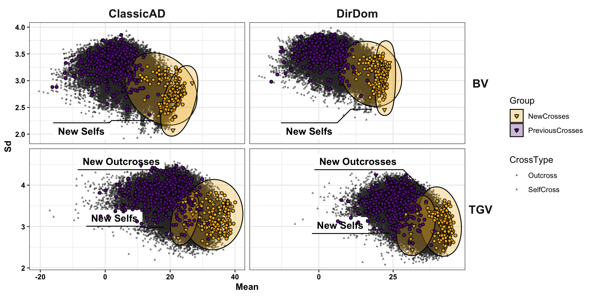
| Version | Author | Date |
|---|---|---|
| 22e6c87 | wolfemd | 2021-01-03 |
forplot_std_bvVStgv<-forplot_std %>%
select(-Mean,-Sd) %>%
spread(Component,UC)
bvVStgv<-forplot_std_bvVStgv %>%
ggplot(.,aes(x=BV,y=TGV,shape=CrossType)) +
geom_point(color='gray20',size=0.75, alpha=0.6) +
geom_abline(slope=1, color='darkred') +
geom_mark_ellipse(data=forplot_std_bvVStgv %>%
filter(Group=="NewCrosses") %>%
mutate(lab=ifelse(CrossType=="SelfCross","New Selfs","New Outcrosses")),
aes(fill=Group,label=lab), expand = unit(2.5, "mm")) +
geom_point(data = forplot_std_bvVStgv %>% filter(!is.na(Group),IsSelf==FALSE),
aes(x=BV,y=TGV,fill=Group), shape=21, color='black',inherit.aes = F) +
geom_point(data = forplot_std_bvVStgv %>% filter(!is.na(Group),IsSelf==TRUE),
aes(x=BV,y=TGV,fill=Group), shape=25, color='black',inherit.aes = F) +
scale_color_viridis_d() +
scale_fill_manual(values = c("goldenrod2","darkorchid4")) +
facet_grid(.~Model, scales='free') +
theme_bw() +
theme(axis.title = element_text(face='bold', color='black', size=12),
axis.text = element_text(face='bold', color='black'),
strip.background = element_blank(),
strip.text = element_text(face='bold', size=14),
strip.text.y = element_text(angle=0)) +
labs(x = expression("UC"["parent"]~" (BV)"), y=expression("UC"["variety"]~" (TGV)"))
bvVStgv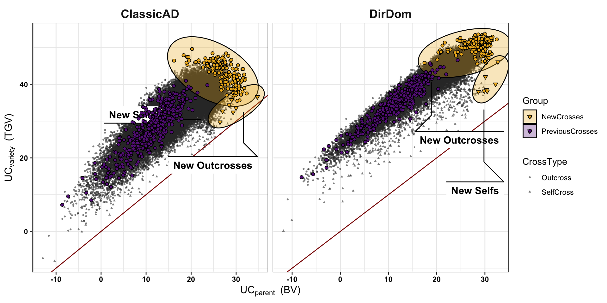
Appendix
Validation-data types (GBLUPs vs. i.i.d. BLUPs): Prediction accuracy using GBLUPs as validation gives a nearly uniformly higher correlation (mean 0.19 higher) as opposed to the i.i.d. BLUPs for family means (Figure S03, Figure S05, Table S10). Figure S04 illustrates that accuracies per trait-fold-rep-model do not re-rank much depending on whether GBLUPs or i.i.d. BLUPs were used as validation data. Given these results, we only consider accuracy based on GBLUPs in the comparisons below. As for the family means, we compared the estimates of variance-prediction accuracy obtained using GBLUPs versus i.i.d. BLUPs. Similar to the means, GBLUPs-as-validation data for variances led to higher estimates of accuracy on average (mean 0.073). We briefly explored the consequences of using GBLUPs vs. i.i.d. BLUPs as validation data. First, we found that there is re-ranking of accuracies between validation data-types (Figure S09). However, plotting the distributions of accuracies for variances (Figure S10A) and covariances (Figure S10B) suggests that we would reach similar but less strong conclusions about the difference between prediction models and variance components. Moreover, we would reach similar conclusions about which trait variances and trait-trait covariances are best or worst predicted. We thus consider for our primary conclusions, the prediction accuracy with GBLUP-derived validation data. Based on the i.i.d. BLUP for validation estimates, we noted that the accuracy predicting variance on the BiofortSI was negative (FiguresS09, FiguresS10), a fact which would preclude use for selection. Validation sample variance for a selection index, based on i.i.d. BLUPs sample size is limited relative to using GBLUPs because clones in each family must have observed BLUPs for each component trait or else the observed SI value cannot be computed.
What difference does the weighted correlation make? For variances (but not means), we chose to weight prediction-observation pairs according to the number of family members (GBLUPs-as-validation) or the number of observed non-missing i.i.d. BLUPs per family per trait (i.i.d. BLUPs-as-validation) when computing prediction accuracies. The weighted correlations are justified because large families (or heavily phenotyped ones) should have better-estimated variances than small ones. Below, we consider briefly the effect weighted correlations have on results. We found that the weighted-vs-unweighted (WT vs. no WT) accuracies are themselves highly correlated (mean cor. 0.87) across traits, variance components, models and validation-data types. There was not a consistent increase or decrease in accuracy according to weighting. Across variance components, models, validation-data and var. methods (PMV vs. VPM), very close to mean 0 diff. between WT and no WT, but generally WT>no WT. Conclusions appear to be at least qualitatively similar whether or not weighted correlations are considered as measures of accuracy (Figure S11).
sessionInfo()R version 4.0.2 (2020-06-22)
Platform: x86_64-apple-darwin17.0 (64-bit)
Running under: macOS Catalina 10.15.7
Matrix products: default
BLAS: /Library/Frameworks/R.framework/Versions/4.0/Resources/lib/libRblas.dylib
LAPACK: /Library/Frameworks/R.framework/Versions/4.0/Resources/lib/libRlapack.dylib
locale:
[1] en_US.UTF-8/en_US.UTF-8/en_US.UTF-8/C/en_US.UTF-8/en_US.UTF-8
attached base packages:
[1] stats graphics grDevices utils datasets methods base
other attached packages:
[1] V8_3.4.0 concaveman_1.1.0 ggforce_0.3.2.9000 patchwork_1.1.0
[5] magrittr_2.0.1 forcats_0.5.0 stringr_1.4.0 dplyr_1.0.2
[9] purrr_0.3.4 readr_1.4.0 tidyr_1.1.2 tibble_3.0.4
[13] ggplot2_3.3.2 tidyverse_1.3.0 workflowr_1.6.2
loaded via a namespace (and not attached):
[1] nlme_3.1-151 fs_1.5.0 lubridate_1.7.9.2 httr_1.4.2
[5] rprojroot_2.0.2 tools_4.0.2 backports_1.2.1 utf8_1.1.4
[9] R6_2.5.0 DBI_1.1.0 colorspace_2.0-0 withr_2.3.0
[13] tidyselect_1.1.0 gridExtra_2.3 mnormt_2.0.2 curl_4.3
[17] compiler_4.0.2 git2r_0.27.1 textshaping_0.2.1 cli_2.2.0
[21] rvest_0.3.6 xml2_1.3.2 labeling_0.4.2 scales_1.1.1
[25] psych_2.0.9 systemfonts_0.3.2 digest_0.6.27 rmarkdown_2.6
[29] pkgconfig_2.0.3 htmltools_0.5.0 dbplyr_2.0.0 rlang_0.4.9
[33] readxl_1.3.1 rstudioapi_0.13 gridGraphics_0.5-1 farver_2.0.3
[37] generics_0.1.0 jsonlite_1.7.2 Rcpp_1.0.5 munsell_0.5.0
[41] fansi_0.4.1 viridis_0.5.1 lifecycle_0.2.0 stringi_1.5.3
[45] whisker_0.4 yaml_2.2.1 MASS_7.3-53 grid_4.0.2
[49] parallel_4.0.2 promises_1.1.1 crayon_1.3.4 lattice_0.20-41
[53] haven_2.3.1 hms_0.5.3 tmvnsim_1.0-2 knitr_1.30
[57] pillar_1.4.7 reprex_0.3.0 glue_1.4.2 evaluate_0.14
[61] modelr_0.1.8 vctrs_0.3.5 tweenr_1.0.1 httpuv_1.5.4
[65] cellranger_1.1.0 gtable_0.3.0 polyclip_1.10-0 assertthat_0.2.1
[69] xfun_0.19 broom_0.7.2 later_1.1.0.1 ragg_0.4.0
[73] viridisLite_0.3.0 corrplot_0.84 ellipsis_0.3.1 here_1.0.1